vignettes/combiroc_singlecell.Rmd
combiroc_singlecell.Rmd
library(dplyr)
library(Seurat)
library(patchwork)
library(combiroc)
library(SeuratData)
library(SeuratDisk)
library(tidyr)
library(ggplot2)
library(ggpubr)
library(RColorBrewer)
library(colorspace)
library(cowplot)
library(pheatmap)
library(scattermore)Single-cell transcriptomics is a rapidly growing field which is essential to improve our understanding of complex tissues and organisms at an unprecedent resolution. A major limitation in most scRNA-seq analysis is the manual annotation step, which is the gold standard procedure to determine cell populations identities. This step is highly time-demanding as it involves the manual inspection of a considerable amount of cluster-specific marker genes, which must be checked one by one in literature [1] . In addition, some marker gene could be unspecific if taken singularly, specially if that given gene is involved in all the differentiation steps in some cellular population of the dataset (from stem cells to a terminally differentiated population), making it a differentially expressed gene (DEG) in more than one cluster.
In this context we decided to employ combiroc in the scRNA-seq analysis field as a signature refiner, in order to find the best marker genes combinations from a list of differentially expressed genes, and then, by exploiting the new classifying feature of our package, we fit the models computed for those combinations to predict the identity of cells in a cluster-independent way.
Being combiroc specialized in finding specific combinations, its use may allow researchers to find some cells of interest with a high degree of confidence and help them in the process of manual annotation by reducing the number of marker genes to consider.
Here we show an exemplificative workflow of combiroc-mediated classification at single-cell resolution in which we used 3 PBMC pubblic datasets, two from 10X Genomics datasets and from the Covid19 Cell Atlas (patient donors section). All of them have been deeply characterized and scrupulously labelled, so they are accepted and used as reference by the scientific community.
TRAINING DATASET
As combiroc training dataset we used PBMC68K (reduced version) from Zheng, G., Terry, J., Belgrader, P. et al. 2016 [2]. From the reduced version of this dataset (also available as scanpy.datasets.pbmc68k_reduced from the [Scanpy API]) we extracted the top 30 differentially expressed genes (DEGs) of NK cells cluster. The notorious difficulty to distinguish NK from CD8+ T cells in many scRNAseq datasets is a perfect challenge to test combiroc’s performance in markers signature optimization.
We are going to use combiroc on the top 30 NK cells markers to select the best markers combination whose classification model will be use on independent test/validation datasets of the same kind.
TEST/VALIDATION DATASETS
As independent test/validation we used 2 different datasets on which we will fit the models from the previously selected marker combination to find the predicted NK cells and compare the so obtained classification with the already annotated labels of the clusters (ground truth).
These are the two datsets used as test/validation: - PBMC3K from Satija, R., Farrell, J., Gennert, D. et al. 2015 [3] - COVID-19 PBMC Ncl-Cambridge-UCL from Stephenson, E., Reynolds, G., Botting, R.A. et al. 2021 [4].
Please note: the main reason we choose the above datasets is because they are well annotated. While the cell clusters annotation of the first (training) dataset was indeed used in the computations by combiroc (we needed to distinguish NK cells from all other cells), the cells annotation of the other two validation datasets is stripped away from the data, and it will be only used ex-post as a ground truth to check the prediction results.
The code described in this vignette was originally run on a jupyter-based R-kernel notebook backed by a high-performance computing (HPC) server infrastructure. Due to relevant size of some of the objects loaded and/or created (such as the Seurat object and count data of the PBMC-Covid19 dataset) it is unlikely that the whole code can be run on a standard computing equipment (i.e. a laptop). For this reason many intermediate objects/files have been pre-computed and can be read as RDS files: such files have names starting with precomp_. In this way the reader/reviewer will be able to complete the whole workflow without having a HPC server. It is mentioned throughout the code when this occurs.
To be able to run the whole workflow without high memory or computational requirements the user need to download all the pre-computed files to be read instead, preserving the file names and folder structure (or changing the code accordingly).
The purpose of this analysis is to find - starting from a NK-cell scRNAseq signature - the combinations of known gene markers that best describe the NK-cell populations, and using the models calculated on such combinations on other scRNAseq datasets.
To guarantee the best possible performance of the training dataset (the one we extract the markers combinations from) is important to make sure its value ranges are similar to those of the test/validation datasets. For this reason we will use the raw counts matrices for all the datasets, so we will be able to consistently rescale them in the same way by using the function Seurat::ScaleData().
We start working on the training dataset, preprocessing it, extracting the NK-cells markers, finding their best markers combinations with combiroc and the relative models that will be used on the test/validation datasets.
The 10X Genomics datasets are availale from diverse sources. We are using here the subsampled (reduced) version obtained from the Scanpy Python library’s API (scanpy.datasets.pbmc68k_reduced). This dataset is reduced to contain expression values from around 700 cells and we’re going to use it as our training datasets. To do so we need to retrieve information on the identity of each cell, their clustering and gene markers of each cluster.
I order to gain such info as faithfully as possible to the original work (Zheng et al. 2019) without repeating the analysis, we extracted the UMAP coordinates, individual cell labels (identities) and DEGs from the AnnData object in Scanpy: these data were then saved as .h5ad file, then converted either into .h5seurat or .csv files that we use now to build an R Seurat object.
pbmc68k_reduced <- LoadH5Seurat("../inst/external_data/pbmc68k/train_dataset.h5seurat",
misc = F)Now add the annotations:
# pbmc68k_reduced_labels <-
# read.csv2('../inst/external_data/pbmc68k/bulk_labels.csv',
# sep = ',') Idents(pbmc68k_reduced) <-
# pbmc68k_reduced_labels[,2]
Idents(pbmc68k_reduced) <- pbmc68k_reduced@meta.data$bulk_labelsAnd the list of gene markers (i.e. differentially expressed genes) for each identified cluster:
pbmc68k_reduced_degs <- read.csv2("../inst/external_data/pbmc68k/pbmc68k_degs.csv",
sep = ",")
head(pbmc68k_reduced_degs)
#> X CD4..CD25.T.Reg CD4..CD45RA..CD25..Naive.T CD4..CD45RO..Memory
#> 1 0 RGS19 ITM2A CAPG
#> 2 1 HIST1H4C RPL39 GABARAPL2
#> 3 2 IL32 TIMM10 FDX1
#> 4 3 GSTK1 CWC15 CRIP1
#> 5 4 SKP1 CXCR4 GATA3
#> 6 5 TMBIM6 LSM5 HPCAL1
#> CD8..Cytotoxic.T CD8..CD45RA..Naive.Cytotoxic CD14..Monocyte CD19..B CD34.
#> 1 CCL5 CD8B C1QA CD79A PRSS57
#> 2 GNLY CD8A PSAP CD79B SNHG7
#> 3 NKG7 RP11-291B21.2 COX14 MS4A1 SERPINB1
#> 4 GZMH CD7 NEAT1 IGJ C19orf77
#> 5 CHCHD7 NECAP2 NUP214 IGLL5 SPINK2
#> 6 SRSF2 ANAPC16 RAB7A SPIB IMPDH2
#> CD56..NK Dendritic
#> 1 GNLY CST3
#> 2 NKG7 LYZ
#> 3 CD7 LST1
#> 4 CLIC3 IRF7
#> 5 SPON2 C10orf54
#> 6 TYROBP ZNHIT1The Seurat object built in this way can now be plotted with canonical Seurat::DimPLot() function.
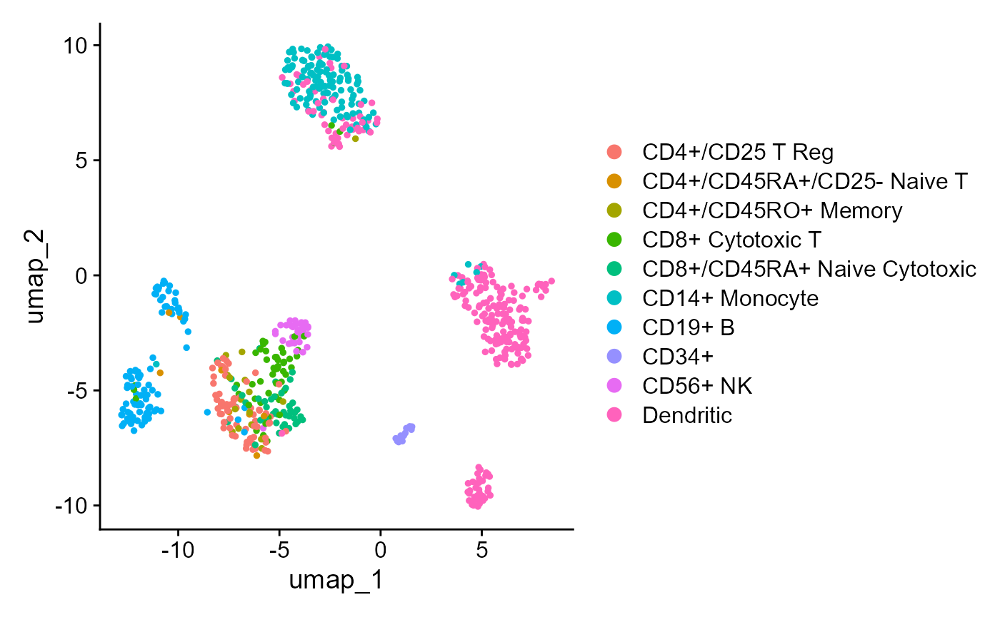
We are interested in the marker genes of the NK cells (CD56+ NK cluster), and we are going to consider the top 30 genes. We load a dataframe the cell markers as in (Zeng et al. 2017), and we extract the first 30 from the CD56+ NK column of the previously loaded dataframe: this will be our NK markers list, the NK_signature.
NK_signature <- pbmc68k_reduced_degs$CD56..NK[1:30]
NK_signature_orig <- NK_signature # backup purpose to preserve original orderBy visualising the expression values of the top 9 markers of NK cells cluster it is evident that the majority of them is also higly expressed in other non-NK clusters, making them too unspecific to allow a well defined cluster annotation if considered individually.
FeaturePlot(pbmc68k_reduced, features = NK_signature[1:6])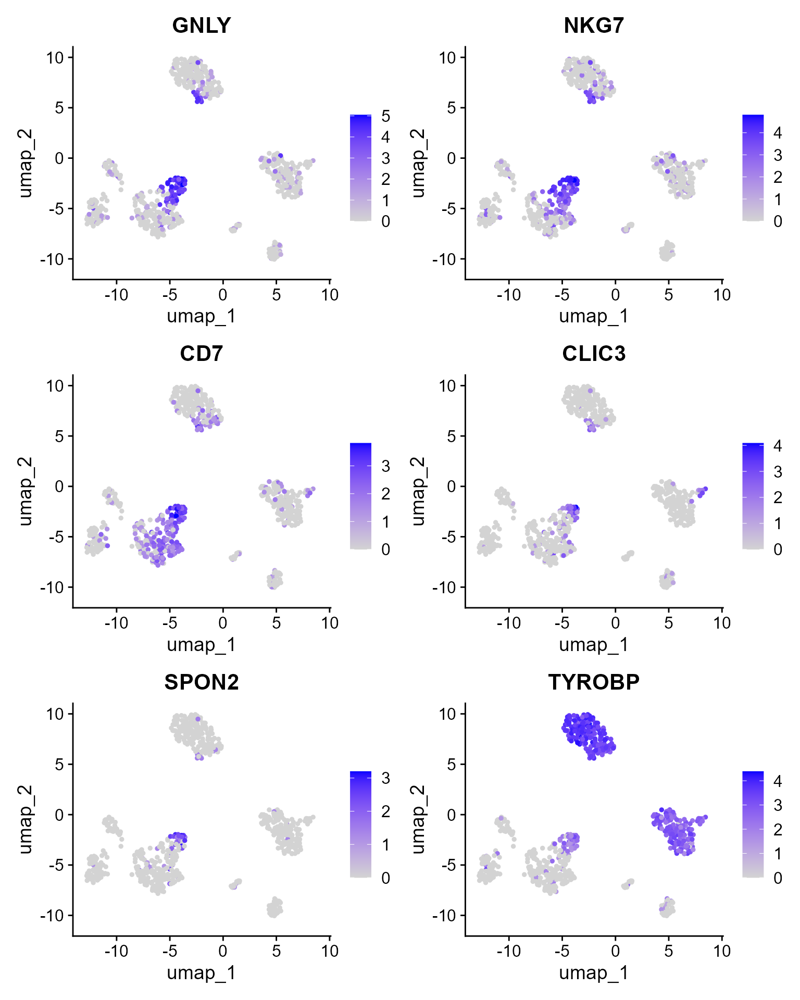
This is much evident with the Natural Killer Cell Granule Protein 7 gene (NKG7) which is found to be enriched in NK cells, but also in CD8+ T clusters, specially in CD8+ cytotoxic T cells.
plot <- FeaturePlot(pbmc68k_reduced, features = "NKG7", pt.size = 1,
label = T, label.size = 4, repel = T)
asp.ratio <- 1
plot + theme(plot.title = element_text(size = 5))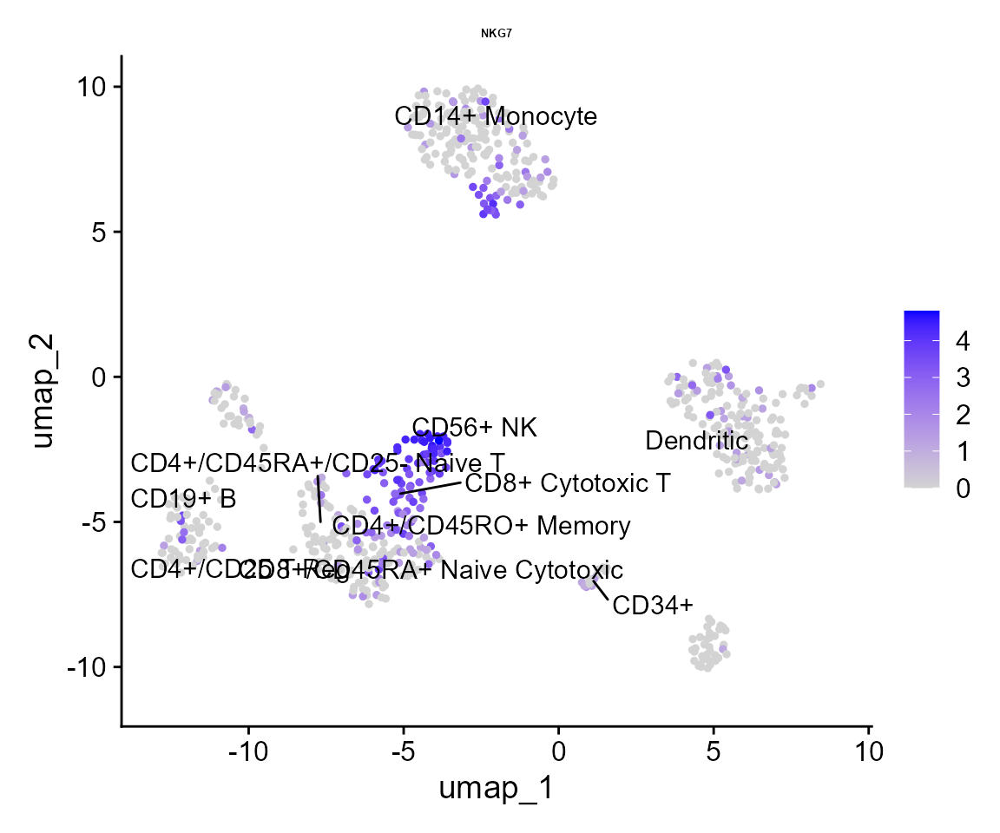
As previously mentioned, to be sure to compare gene expressions with the same value range we have to obtain the raw counts for the ~ 700 cells in the reduced PBMC-68K dataset from the complete original pbmc68k dataset. We are using the .rds file that can be downloaded from the 10X Genomics GitHub repository to build a dataframe of raw counts of all cells in the dataset. For reproducibility purpose the next three code chunks are gven but not run. To run them you need to download the PBMC68k_data.rds linked above.
(Code not run. The next 3 code chunks are computationally intensive. See below for precomputed object)
# read the file with counts for the 700 cells in the
# reduced PBMC68K dataset
pbmc_68k <- readRDS("./inst/external_data/pbmc68k/pbmc68k_data.rds")
# extract counts, and annotations
m <- as.matrix(pbmc_68k$all_data[[1]]$hg19$mat)
genes <- pbmc_68k$all_data[[1]]$hg19$gene_symbols
barcodes <- pbmc_68k$all_data[[1]]$hg19$barcodes
# build a dataframe df with extracted info
df <- data.frame(m)
rownames(df) <- barcodes
colnames(df) <- genesThe obtained dataframe has 68579 rows (cells) and 32738 columns (features, genes). As per the nature of the single cell gene expression experiment it consists in a sparce matrix full of zeroes.
From this count matrix we can now generate a Seurat object and then scale the data. Please note that we need to make this operation on the translated matrix. We are scaling with default parameters, thus values are scaled from 0 to 10.
(Code not run)
pbmc68k <- CreateSeuratObject(t(df))
pbmc68k <- ScaleData(pbmc68k, do.center = F)To create the combiroc training dataset object (data) on which we will run the combiroc::roc_reports() function to obtain the combiroc models (see the “Classification of new samples” section in the main combiroc vignette), we subsetted the scaled data matrix for the 700 cells of the reduced dataset, and for the 30 top DEGs of NK cells cluster.
The cell barcodes have been used as “sample IDs” and to all cells were assigned either the “NK” or the “Other” class depending on the cluster label (columns ‘ID’ and ‘Class’).
Thus here we’re selecting Sample IDs (barcodes) of the 700 cells in the reduced dataset, then subsetting the whole dataset for the same 700 cells and 30 marker genes. Since in this workflow we don’t use the combiroc::load_data() function, it is necessary to reorder alphabetically the gene names of the obtained signature. This is needed to properly compute and keeping tracks of combinations (the reordering operation is normally carried out by the load_data() function).
NK_signature <- NK_signature[order(NK_signature)](Code not run)
cells_68k <- colnames(pbmc68k_reduced[["RNA"]]@counts)
data <- data.frame(t(as.matrix(pbmc68k[["RNA"]]@scale.data[NK_signature,
cells_68k])))The code above produces a data dataframe that can be directly read from a pre-computed RDS file. Running the code above the user can obtain the very same dataframe but extended computational power is needed to handle the original PBMC68K dataset and corresponding Seurat object.
data <- readRDS("../inst/precomp/precomp_data_reduced.rds")
head(data)
#> CD160 CD300A CD7 CLIC3 CST7 CTSW DCXR FCER1G GGNBP2 GNLY GZMA GZMB HOPX IGFBP7 IMP3 ITGB2 LAT2 MATK MCM7 MEA1 MIEN1
#> AAAGCCTGGCTAAC-1 0.000000 0 0.000000 0 0.000000 0.000000 0.000000 5.062925 0.000000 0.1471696 0.000000 0.000000 0 0.000000 0.000000 2.013254 0.000000 0.000000 0 2.65115 2.056144
#> AAATTCGATGCACA-1 0.000000 10 0.000000 0 0.000000 0.000000 0.000000 8.438208 2.343022 0.0000000 0.000000 0.000000 0 0.000000 1.731723 3.019882 0.000000 0.000000 0 2.65115 0.000000
#> AACACGTGGTCTTT-1 5.280963 0 5.620946 10 2.204786 4.401054 1.940979 1.125094 0.000000 3.2377306 1.330712 1.724473 0 8.937338 0.000000 3.019882 4.288409 2.141335 0 0.00000 4.112289
#> AAGTGCACGTGCTA-1 0.000000 0 0.000000 0 0.000000 0.000000 0.000000 0.000000 0.000000 0.0000000 0.000000 0.000000 0 0.000000 0.000000 2.013254 0.000000 0.000000 0 0.00000 4.112289
#> ACACGAACGGAGTG-1 0.000000 0 0.000000 0 0.000000 0.000000 5.822938 5.062925 0.000000 0.0000000 0.000000 0.000000 0 0.000000 1.731723 2.013254 0.000000 0.000000 0 0.00000 2.056144
#> ACAGTTCTTAGCCA-1 0.000000 0 0.000000 0 0.000000 0.000000 0.000000 0.000000 2.343022 0.0000000 0.000000 0.000000 0 0.000000 1.731723 0.000000 4.288409 0.000000 0 2.65115 2.056144
#> MSN NDUFA2 NKG7 PLAC8 SPON2 TTC38 TYROBP UPP1 XCL1
#> AAAGCCTGGCTAAC-1 0.000000 1.980714 0.00000 3.568724 0 0.000000 6.783792 0 0
#> AAATTCGATGCACA-1 4.346793 0.000000 0.00000 1.189575 0 0.000000 5.814679 0 0
#> AACACGTGGTCTTT-1 0.000000 0.000000 5.61025 5.947874 10 0.000000 1.453670 0 0
#> AAGTGCACGTGCTA-1 0.000000 3.961427 0.00000 0.000000 0 0.000000 0.000000 0 0
#> ACACGAACGGAGTG-1 0.000000 1.980714 0.00000 0.000000 0 0.000000 4.361009 0 0
#> ACAGTTCTTAGCCA-1 0.000000 10.000000 0.00000 0.000000 0 4.470116 0.000000 0 0We are now adding two additional columns, one as ID using the barcodes (cells) in the rownames and the second for the “Class” for each cell. Then we set a numerical index as rownames.
data$ID <- rownames(data)
data$Class <- pbmc68k_reduced@active.ident == "CD56+ NK"
rownames(data) <- 1:dim(data)[1]Finally, we reorder the columns and we populate the Class column with either “NK” of “Other” labels. The data dataframe is now ready to be further processed with combiroc.
data <- data[, c(dim(data)[2] - 1, dim(data)[2], 3:dim(data)[2] -
2)]
data$Class[data$Class == TRUE] <- "NK"
data$Class[data$Class == FALSE] <- "Other"
head(data)
#> ID Class CD160 CD300A CD7 CLIC3 CST7 CTSW DCXR FCER1G GGNBP2 GNLY GZMA GZMB HOPX IGFBP7 IMP3 ITGB2 LAT2 MATK MCM7 MEA1
#> 1 AAAGCCTGGCTAAC-1 Other 0.000000 0 0.000000 0 0.000000 0.000000 0.000000 5.062925 0.000000 0.1471696 0.000000 0.000000 0 0.000000 0.000000 2.013254 0.000000 0.000000 0 2.65115
#> 2 AAATTCGATGCACA-1 Other 0.000000 10 0.000000 0 0.000000 0.000000 0.000000 8.438208 2.343022 0.0000000 0.000000 0.000000 0 0.000000 1.731723 3.019882 0.000000 0.000000 0 2.65115
#> 3 AACACGTGGTCTTT-1 NK 5.280963 0 5.620946 10 2.204786 4.401054 1.940979 1.125094 0.000000 3.2377306 1.330712 1.724473 0 8.937338 0.000000 3.019882 4.288409 2.141335 0 0.00000
#> 4 AAGTGCACGTGCTA-1 Other 0.000000 0 0.000000 0 0.000000 0.000000 0.000000 0.000000 0.000000 0.0000000 0.000000 0.000000 0 0.000000 0.000000 2.013254 0.000000 0.000000 0 0.00000
#> 5 ACACGAACGGAGTG-1 Other 0.000000 0 0.000000 0 0.000000 0.000000 5.822938 5.062925 0.000000 0.0000000 0.000000 0.000000 0 0.000000 1.731723 2.013254 0.000000 0.000000 0 0.00000
#> 6 ACAGTTCTTAGCCA-1 Other 0.000000 0 0.000000 0 0.000000 0.000000 0.000000 0.000000 2.343022 0.0000000 0.000000 0.000000 0 0.000000 1.731723 0.000000 4.288409 0.000000 0 2.65115
#> MIEN1 MSN NDUFA2 NKG7 PLAC8 SPON2 TTC38 TYROBP UPP1 XCL1
#> 1 2.056144 0.000000 1.980714 0.00000 3.568724 0 0.000000 6.783792 0 0
#> 2 0.000000 4.346793 0.000000 0.00000 1.189575 0 0.000000 5.814679 0 0
#> 3 4.112289 0.000000 0.000000 5.61025 5.947874 10 0.000000 1.453670 0 0
#> 4 4.112289 0.000000 3.961427 0.00000 0.000000 0 0.000000 0.000000 0 0
#> 5 2.056144 0.000000 1.980714 0.00000 0.000000 0 0.000000 4.361009 0 0
#> 6 2.056144 0.000000 10.000000 0.00000 0.000000 0 4.470116 0.000000 0 0Then, as described in the main combiroc vignette, we used combiroc_long to make the data in long form for plotting functions.
data_long <- combiroc_long(data)
head(data_long)
#> # A tibble: 6 x 4
#> ID Class Markers Values
#> <chr> <chr> <chr> <dbl>
#> 1 AAAGCCTGGCTAAC-1 Other CD160 0
#> 2 AAAGCCTGGCTAAC-1 Other CD300A 0
#> 3 AAAGCCTGGCTAAC-1 Other CD7 0
#> 4 AAAGCCTGGCTAAC-1 Other CLIC3 0
#> 5 AAAGCCTGGCTAAC-1 Other CST7 0
#> 6 AAAGCCTGGCTAAC-1 Other CTSW 0We have previously extracted the top 30 marker genes from the NK-cells cluster of the reduced-PBMC68K dataset. These are the genes that compose the NK_signature:
NK_signature_orig
#> [1] "GNLY" "NKG7" "CD7" "CLIC3" "SPON2" "TYROBP" "GZMB" "PLAC8" "FCER1G" "CTSW" "CST7" "MIEN1" "IGFBP7" "GZMA" "ITGB2" "MATK" "MSN" "DCXR" "MCM7" "MEA1" "LAT2"
#> [22] "XCL1" "NDUFA2" "HOPX" "TTC38" "UPP1" "IMP3" "CD300A" "GGNBP2" "CD160"Given a list of markers, combiroc assesses the performance of all combinations of such markers. The computational load of this process can be high for more than 10 markers. A list of \(n\) markers generates \({2^{n} - 1 }\), thus for \(n=30\) we have more than a billion possible combinations.
Mathematically, for combinations here we mean combinations without repetition, i.e. a subset of \(k\) distinct elements of a set with \(n\) elements, that can be calculated as the binomial coefficient \(\binom{n}{k}\).
The purpose of combiroc is always finding the best optimized combination of markers, i.e. a subset of the original full signature which, despite the much smaller number of markers, retains the discriminatory power of the original signatue or it’s even better. This is particularly important in the field of diagnostics where a smaller set of marker has a bigger translational potential (see our first combiroc paper Mazzara et al. 2017 for a discussion on this).
Similarly, here we will limit the search to combinations composed by no more than 5 markers: to do so we will set the max_length = 5 attribute of the combi() function. With this limitation the number of combinations to compute drops to 174,436, which is computationally more manageable.
\[ Combinations(upTo5Markers) = \sum_{i=1}^5 \binom{n}{i} \]
#> n_markers n_combs tot_combs
#> 1 1 30 30
#> 2 2 435 465
#> 3 3 4060 4525
#> 4 4 27405 31930
#> 5 5 142506 174436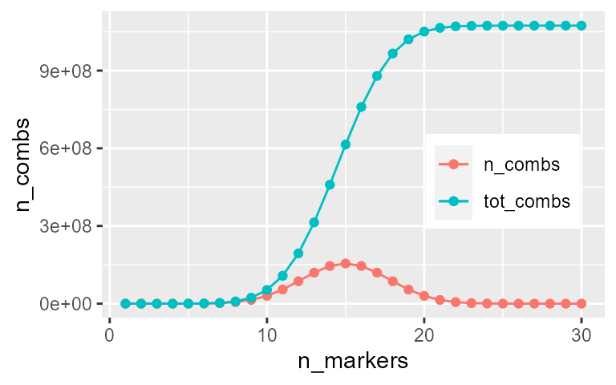
The combi() function works on the data dataset and it computes the marker combinations and counts their corresponding positive samples for each class (once thresholds are selected). A sample, to be considered positive for a given combination, must have a value higher than a given signal threshold (signalthr) for at least a given number of markers composing that combination (combithr).
As described in the combiroc’s vignette for the standard workflow, the argument signalthr in the combi() function should be set depending on the guidelines and characteristics of the methodology used for the analysis or by an accurate inspection of signal intensity distribution. In case of lack of specific guidelines, one should set the value signalthr as suggested by the distr$Density_plot feature.
Single cell RNAseq datasets are exactly one of such cases in which it’s not possible or easy to extrapolate the best signal threshold, due to the highly scattered distribution of the expression values: here we thus take advantage of the package-specific distr$Density_plot feature and will let the package find this value without intervention.
The core of a combiroc analysis are the two marker_distribution() and combi() functions: changing the value of key parameters in these functions we can modulate the stringency and severity of the analysis.
In the first step (marker_distribution()), min_SE and min_SP can be adjusted: while we leave untouched the suggested values min_SP = 80, we are going to raise the defalut min_SE value.
In the second step (combi()), the combithr argument can be set to 1 (the default) or raised to 2: this is the minimum number of positively expressed genes (i.e. the minimum number of genes that need to reach the signal threshold) to consider the whole combination as a valid one.
Playing with these parameters we define three modalities of increasing stringency:
For all these three modes we now perform the combiroc workflow on the training dataset data, containing the expression values of the 30 NK signature genes in 700 cells from the PBMC68K dataset. We are going to see the procedure in details for the Default mode and how to run it quickly for the other two modes.
Firstly we performed the combiroc analysis steps with default parameteres to asses the perfomance of classification without fine tuning: setting (suggested default values) min_SE = 40 and min_SP = 80 in markers_distributions()as well as combithr = 1 in combi().
The plots below show expression values (signal) distribution obtained with the markers_distributions() functions on the training dataset in long format (data_long). Differently from two well-defined classes (as seen in the standard combiroc workflow), it’s not intuitive where to put the signal threshold, but the function suggests a signal intensity value of 2. The plot on the right zooms in to the zone of interest (please note that running this function triggers a few automatic warnings that are meant to remind how SE and SP thresholds should be judged).
Genes expression values, as expected, are distributed in diffent ways in the two classes:
Please note: the markers_distribution() command naturally triggers a few warnings in which the user is reminded how to use the command arguments)
distr1 <- markers_distribution(data_long, min_SE = 40, min_SP = 80,
signalthr_prediction = TRUE, case_class = "NK")
distr2 <- markers_distribution(data_long, min_SE = 40, min_SP = 80,
signalthr_prediction = TRUE, case_class = "NK", y_lim = 0.8,
x_lim = 4)
p1 <- distr1$Density_plot
p2 <- distr2$Density_plot
p1 + p2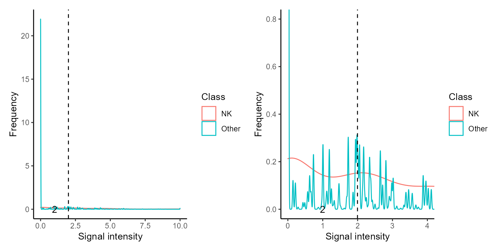
Let’s apply now the combi() function on the training dataset data with the suggested threshold. The results is a table (the tab_default dataframe) of all the combinations with 1 (= the individual markers) to 5 genes in them.
(if computationally heavy, use the pre-computed below)
tab_default <- combi(data, signalthr = 2, combithr = 1, max_length = 5)
# read the pre-computed tab_default dataset:
tab_default <- readRDS(file = "../inst/precomp/precomp_tab_default.rds")After renaming column names for clarity, we can have a glimpse at the obtained table. This dataframe contains all 174436 unique combinations of up to 5 markers among 30 markers (i.e. 30 single markers + 174406 combinations of 2, 3, 4 and 5 genes).
colnames(tab_default) <- c("Markers", "#Positives Other", "#Positives NK")
tail(tab_default)
#> Markers #Positives Other #Positives NK
#> Combination 174401 PLAC8-SPON2-TTC38-TYROBP-UPP1 438 30
#> Combination 174402 PLAC8-SPON2-TTC38-TYROBP-XCL1 406 29
#> Combination 174403 PLAC8-SPON2-TTC38-UPP1-XCL1 242 30
#> Combination 174404 PLAC8-SPON2-TYROBP-UPP1-XCL1 427 28
#> Combination 174405 PLAC8-TTC38-TYROBP-UPP1-XCL1 438 30
#> Combination 174406 SPON2-TTC38-TYROBP-UPP1-XCL1 353 29Sensitivity (SE) and specificity (SP) can now be computed from the numbers in the tab_default dataframe.
Since the case class in this case is ‘NK’ we focused on SE% NK (percentage of real ‘NK’ detected) and on SP% Other (percentage of real ‘Other’ not detected).
(SE% NK = SE% combination ; SP% Other = SP% combination)
mks <- se_sp(data, combinations_table = tab_default)
head(mks)
#> SE_Other SE_NK SP_Other SP_NK #Markers
#> CD160 1 39 99 61 1
#> CD300A 23 45 77 55 1
#> CD7 5 74 95 26 1
#> CLIC3 3 68 97 32 1
#> CST7 4 58 96 42 1
#> CTSW 6 81 94 19 1Then we rank the combinations by Youden index (SE+SP) and we filter them by their SE and SP values. We will select the top 4 (for demonstration purposes only, others may be also good): what we are using to rank is the Youden index and the number of genes in the combiantion, where combinations with fewer genes are considered better ones.
rmks <- ranked_combs(data, combo_table = mks, case_class = "NK",
min_SE = 60, min_SP = 80)
head(rmks$table)
#> SE_Other SE SP SP_NK #Markers Youden
#> Combination 1687 7 100 93 0 3 0.93
#> Combination 3196 7 100 93 0 3 0.93
#> Combination 3664 7 100 93 0 3 0.93
#> Combination 6850 7 100 93 0 4 0.93
#> Combination 7318 7 100 93 0 4 0.93
#> Combination 16128 7 100 93 0 4 0.93Now we use the top 4 combinations to train the model and we evaluate the performances of classification within the train dataset computing the ROC curves.
These are the selected combinations:
show_markers(markers_table = tab_default, selected_combinations = c(1687,
3196, 3664, 6850))
#> Combination Composing_markers
#> 1 Combination 1687 CLIC3-GNLY-GZMB
#> 2 Combination 3196 GNLY-GZMB-NKG7
#> 3 Combination 3664 GZMB-NKG7-XCL1
#> 4 Combination 6850 CD160-GNLY-GZMB-NKG7And with roc_reports() we carry out the computations for the selected combinations (we need to explicitly indicate their number IDs in the selected_combinations argument). Also, we need to indicate the case class (NK):
reports <- roc_reports(data, markers_table = tab_default, selected_combinations = c(1687,
3196, 3664, 6850), case_class = "NK")Let’s explore the results generated:
reports$Plot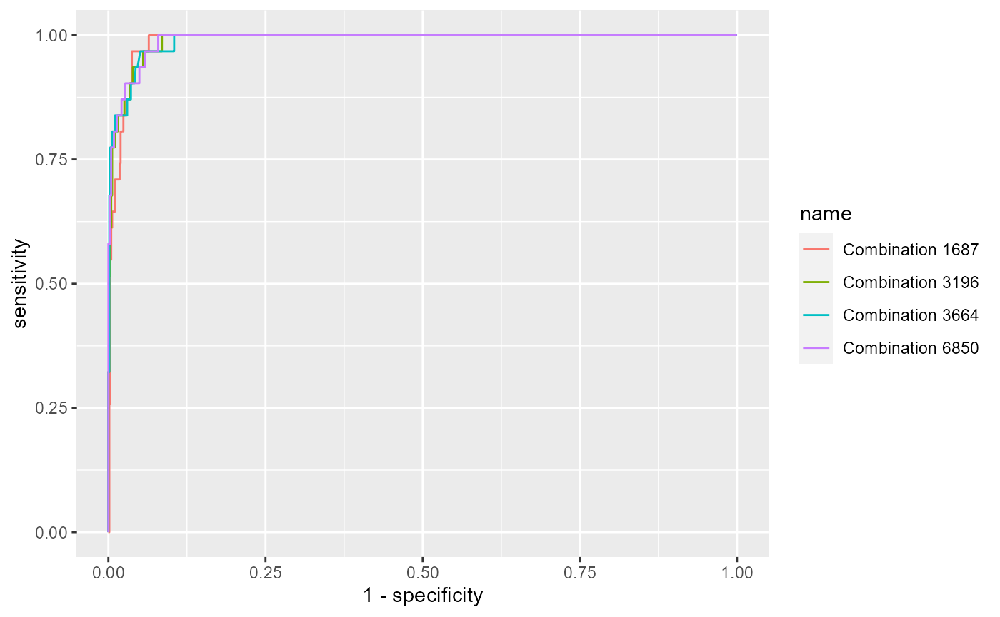
reports$Metrics
#> AUC SE SP CutOff ACC TN TP FN FP NPV PPV
#> Combination 1687 0.988 1.000 0.936 0.048 0.939 626 31 0 43 1.000 0.419
#> Combination 3196 0.990 1.000 0.915 0.007 0.919 612 31 0 57 1.000 0.352
#> Combination 3664 0.990 0.968 0.949 0.063 0.950 635 30 1 34 0.998 0.469
#> Combination 6850 0.991 1.000 0.921 0.010 0.924 616 31 0 53 1.000 0.369As a final step in the default mode setup we store the model, contained in the reports objects list computed right now, in a new object named reports_default and the selected markers list. We will use these objects later on unclassified datasets.
reports_default <- reports
markers_default <- show_markers(markers_table = tab_default,
selected_combinations = c(1687, 3196, 3664, 6850))We now repeat the procedure in hi performance mode, i.e. using a slightly different set of parameters as previously mentioned. Briefly:
markers_distributions(): min_SE = 62, min_SP = 80;combi(): combithr = 1.We run here the code exactly as already shown for the default mode (except for the above parameters). We omit the plots and outputs and we go straight to the final results of the models in the reports object.
These values are choosen as high as possible, in a way to do a ‘stress test’ for our package. min_SP = 80 was untouched considering that, in the optic of helping the researchers with the manual annotation, it is better to find a small amount of correctly classified cells rather than find all the NKs plus a lot of off-targets. By maintaining min_SP at 80, the highest overall SE that can be reached is 62 (with higher values nothing is obtained, this is achieved by try and error). With such parameters the suggested signalthr (as suggested by distr$Density_plot) was equal to 1.22.
distr <- markers_distribution(data_long, min_SE = 62, min_SP = 80,
signalthr_prediction = TRUE, case_class = "NK", y_lim = 0.8,
x_lim = 3)
#> Warning in markers_distribution(data_long, min_SE = 62, min_SP = 80, signalthr_prediction = TRUE, : boxplot_lim is not set. Boxplot may be difficult to interpret due to outliers. You should set an
#> appropriate y axis limit.
#> Warning in markers_distribution(data_long, min_SE = 62, min_SP = 80, signalthr_prediction = TRUE, : The suggested signal threshold in $Plot_density is the median of the signal thresholds at which
#> SE>=min_SE and SP>=min_SP. This is ONLY a suggestion. Please check if signal threshold is suggested by your analysis kit guidelines instead, and remember to check $Plot_density to better judge our
#> suggested threshold by inspecting the 2 distributions.Computing the combination performances.
(Computationally heavy chunk: you can read the precomputed object in the next chunk)
tab_hiperf <- combi(data, signalthr = 1.22, combithr = 1, max_length = 5)
tab_hiperf <- readRDS(file = "../inst/precomp/precomp_tab_hiperf.rds")
colnames(tab_hiperf) <- c("Markers", "#Positives Other", "#Positives NK")
mks <- se_sp(data, combinations_table = tab_hiperf)
rmks <- ranked_combs(data, combo_table = mks, case_class = "NK",
min_SE = 60, min_SP = 80) # using top 4 markers/combinations
reports <- roc_reports(data, markers_table = tab_hiperf, selected_combinations = c(9,
227, 633, 651), case_class = "NK")
reports_hiperf <- reports
markers_hiperf <- show_markers(markers_table = tab_hiperf, selected_combinations = c(9,
227, 633, 651))We now repeat the procedure in sniper mode, i.e. raising the combithr parameter to 2, thus having a more stringent, sniper-like, effect. Briefly:
markers_distributions(): min_SE = 62, min_SP = 80;combi(): combithr = 2.Setting combithr = 2, should penalize short combinations, specially the ones composed by 2 markers. We called this mode sniper mode due to the highly precision it is aimed to. For this case, signalthr is still 1.22 since the marker_distribution() call is not different from the hi-performance mode.
distr <- markers_distribution(data_long, min_SE = 62, min_SP = 80,
signalthr_prediction = TRUE, case_class = "NK", y_lim = 0.8,
x_lim = 3)
#> Warning in markers_distribution(data_long, min_SE = 62, min_SP = 80, signalthr_prediction = TRUE, : boxplot_lim is not set. Boxplot may be difficult to interpret due to outliers. You should set an
#> appropriate y axis limit.
#> Warning in markers_distribution(data_long, min_SE = 62, min_SP = 80, signalthr_prediction = TRUE, : The suggested signal threshold in $Plot_density is the median of the signal thresholds at which
#> SE>=min_SE and SP>=min_SP. This is ONLY a suggestion. Please check if signal threshold is suggested by your analysis kit guidelines instead, and remember to check $Plot_density to better judge our
#> suggested threshold by inspecting the 2 distributions.
# computationally heavy, use the next chunk to read the
# pre-computed object
tab_sniper <- combi(data, signalthr = 1.22, combithr = 2, max_length = 5)
# read the pre-computed tab_hpa dataset:
tab_sniper <- readRDS(file = "../inst/precomp/precomp_tab_sniper.rds")
colnames(tab_sniper) <- c("Markers", "#Positives Other", "#Positives NK")
mks <- se_sp(data, combinations_table = tab_sniper)
rmks <- ranked_combs(data, combo_table = mks, case_class = "NK",
min_SE = 60, min_SP = 80) # using top 4 markers/combinations
reports <- roc_reports(data, markers_table = tab_sniper, selected_combinations = c(470,
103610, 1369, 5018), case_class = "NK")
reports_sniper <- reports
markers_sniper <- show_markers(markers_table = tab_sniper, selected_combinations = c(470,
103610, 1369, 5018))So far we obtained three different set of optimized signatures (combinations) and models, one for each stringency mode (default, hi-performance and sniper) performed on the training dataset data from the reduced PBMC-68K dataset.
Let’s have a look at the three sets of top combinations.
markers_default
#> Combination Composing_markers
#> 1 Combination 1687 CLIC3-GNLY-GZMB
#> 2 Combination 3196 GNLY-GZMB-NKG7
#> 3 Combination 3664 GZMB-NKG7-XCL1
#> 4 Combination 6850 CD160-GNLY-GZMB-NKG7
markers_hiperf
#> Combination Composing_markers
#> 1 Combination 9 CD160-GNLY
#> 2 Combination 227 GNLY-GZMB
#> 3 Combination 633 CD160-GNLY-GZMB
#> 4 Combination 651 CD160-GNLY-XCL1
markers_sniper
#> Combination Composing_markers
#> 1 Combination 470 CD160-CD7-GNLY
#> 2 Combination 103610 CLIC3-GNLY-MCM7-SPON2-XCL1
#> 3 Combination 1369 CD7-GNLY-MCM7
#> 4 Combination 5018 CD160-CD7-GNLY-IGFBP7We can observe that the three sets of combinations do have a certain degree of overlap. Genes such as GNLY, CD160 and XCL1 are preserved in all three analysis modes, but there are also markers that are specific for individual modes: it’s the case of NKG7 which only shows up in the default analysis, and the four genes CD7, MCM7, SPON2 and IGFBP7 that are specific of the sniper mode.
As independent validation to test the selected combination and models we are going to use two different single-cell RNA sequencing datasets to see if the obtained models are able to correctly identify NK cells, without having to rely on the original 30-genes NK-signature.
As already mentioned in the introduction, these datasets are:
The PBMC3K test dataset was directly installed and loaded from the SeuratData library. The dataset is immediately available as a Seurat object named pbmc3k.final.
InstallData("pbmc3k")
data("pbmc3k")This is to render explicit the object of class Seurat just loaded containing the PBMC3K data:
pbmc3k.final <- pbmc3k.final
pbmc3k.final
#> An object of class Seurat
#> 13714 features across 2638 samples within 1 assay
#> Active assay: RNA (13714 features, 2000 variable features)
#> 2 dimensional reductions calculated: pca, umapThe original UMAP embedding of the PBMC-3K datasets:
DimPlot(pbmc3k.final, reduction = "umap", label = F, repel = TRUE)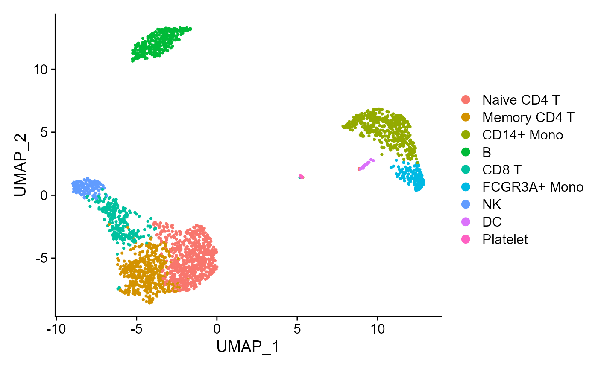
Since we’re using this dataset as test/validation we need to manipuate it by stripping away the information on cells identity (clusters) and re-annotate cells with “NK_tot” and “Other” labels, to be used as a post-analysis groung-truth check. We are going to rebuild the object:
df_3k <- data.frame(Embeddings(pbmc3k.final, reduction = "umap"))
df_3k$cell_type <- Idents(pbmc3k.final)
df_3k <- df_3k %>%
rename(umap_1 = UMAP_1, umap_2 = UMAP_2) %>%
mutate(NK_tot = ifelse(cell_type == "NK", "NK_tot", "Other"))
head(df_3k)
#> umap_1 umap_2 cell_type NK_tot
#> AAACATACAACCAC -4.232792 -4.152139 Memory CD4 T Other
#> AAACATTGAGCTAC -4.892886 10.985685 B Other
#> AAACATTGATCAGC -5.508639 -7.211088 Memory CD4 T Other
#> AAACCGTGCTTCCG 11.332233 3.161727 CD14+ Mono Other
#> AAACCGTGTATGCG -7.450703 1.092022 NK NK_tot
#> AAACGCACTGGTAC -3.509504 -6.087042 Memory CD4 T Other
p1 <- ggplot(df_3k, aes(x = umap_1, y = umap_2, color = cell_type)) +
geom_point(size = 0.8) + scale_color_manual(values = c("#cab2d6",
"#fdbf6f", "#b2df8a", "#fb9a99", "#a6cee3", "#b2df8a", "#e31a1c",
"#1f78b4", "#6a3d9a"))
p2 <- ggplot(df_3k, aes(x = umap_1, y = umap_2, color = NK_tot)) +
geom_point(size = 0.8) + scale_color_manual(values = c("#e31a1c",
"#a6cee3"))
p1 + p2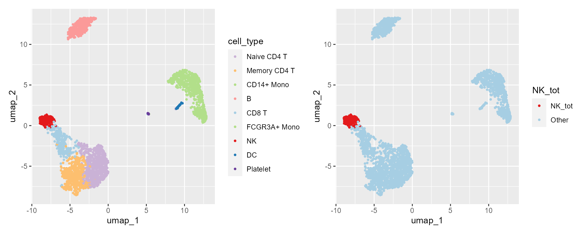
The pre-processing procedure consists in the same steps described for the PBMC68K training set. We are going to perform them onto the PBMC3K dataset in order to obtain the unclassified data_3k test dataset, without the Class column.
The preprocessing consists in the following steps:
Seurat::ScaleData()
The following is the code used for the preprocessing (this is computationally heavy, you can load the pre-computed object in the next code chunk)
# preprocess data
pbmc3k <- ScaleData(pbmc3k, do.center = F) # to scale
# select only the 2638 cells of the final object
cells_3k <- colnames(pbmc3k.final[["RNA"]]@counts)
# subset and annotate
data_3k <- data.frame(t(as.matrix(pbmc3k[["RNA"]]@scale.data[NK_signature,
cells_3k]))) # to subset
data_3k$ID <- rownames(data_3k)
rownames(data_3k) <- 1:dim(data_3k)[1]
# reorder columns
data_3k <- data_3k[, c(dim(data_3k)[2], 2:dim(data_3k)[2] - 1)]Load a pre-computed data_3k object:
data_3k <- readRDS(file = "../inst/precomp/precomp_unc_data_3k.rds")
head(data_3k)
#> ID CD160 CD300A CD7 CLIC3 CST7 CTSW DCXR FCER1G GGNBP2 GNLY GZMA GZMB HOPX IGFBP7 IMP3 ITGB2 LAT2 MATK MCM7 MEA1 MIEN1 MSN NDUFA2
#> 1 AAACATACAACCAC 0 0.000000 1.2085923 1.623497 0.00000 0.9718278 0 0.0000000 0.0000000 0.0000000 0 0.0000000 1.818123 0.0000000 1.306165 0.0000000 0 0 0 0.000000 0 0 0
#> 2 AAACATTGAGCTAC 0 0.000000 0.0000000 0.000000 0.00000 0.0000000 0 0.0000000 0.0000000 0.0000000 0 0.0000000 0.000000 0.0000000 0.000000 1.1285228 0 0 0 2.363893 0 0 0
#> 3 AAACATTGATCAGC 0 0.000000 0.0000000 0.000000 0.00000 0.0000000 0 0.0000000 0.8198958 0.1447639 0 0.0000000 0.000000 0.0000000 0.000000 0.0000000 0 0 0 0.000000 0 0 0
#> 4 AAACCGTGCTTCCG 0 0.000000 0.0000000 0.000000 0.00000 0.0000000 0 1.3619107 0.8198958 0.0000000 0 0.2765865 0.000000 0.0000000 0.000000 0.5642614 0 0 0 0.000000 0 0 0
#> 5 AAACCGTGTATGCG 0 2.063274 0.6042962 0.000000 0.95708 1.9436556 0 0.1945587 0.0000000 0.4342918 0 3.3190382 0.000000 0.9122796 0.000000 1.1285228 0 0 0 0.000000 0 0 0
#> 6 AAACGCACTGGTAC 0 0.000000 0.0000000 0.000000 0.00000 0.0000000 0 0.0000000 0.0000000 0.0000000 0 0.0000000 0.000000 0.0000000 1.306165 0.0000000 0 0 0 0.000000 0 0 0
#> NKG7 PLAC8 SPON2 TTC38 TYROBP UPP1 XCL1
#> 1 0.0000000 0.0000000 0.000000 0 0.0000000 0.000000 0
#> 2 0.1293942 1.4027967 0.000000 0 0.0000000 0.000000 0
#> 3 0.0000000 0.0000000 0.000000 0 0.0000000 0.000000 0
#> 4 0.1293942 0.0000000 0.000000 0 1.5890773 0.000000 0
#> 5 1.4233364 0.9351978 5.491487 0 0.1324231 0.000000 0
#> 6 0.0000000 0.0000000 0.000000 0 0.0000000 2.191459 0Also for this test dataset the NK cells markers are not specific enough individually (with a partial exception of GNLY) to allow a clear cluster annotation. We stored them into the NK_signature_orig object. Let’s have a look at the top six.
FeaturePlot(pbmc3k.final, features = NK_signature_orig[1:6])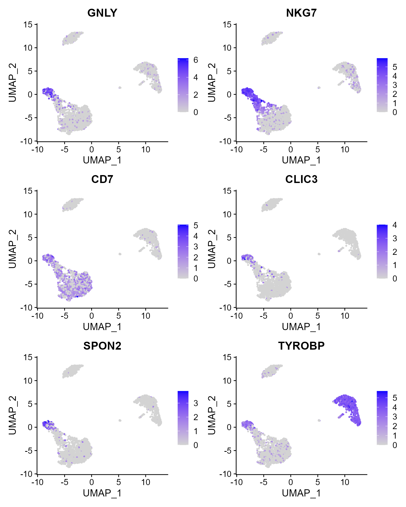
The PBMC-Covid19 dataset from Haniffa’s lab was downloaded from the COVID-19 cell atlas in the .h5ad format (see “COVID-19 PBMC Ncl-Cambridge-UCL” section, then the “haniffa21.processed.h5ad” file among the available downloads). Then it was converted into a SeuratObject and underwent the very same steps of the other datasets, as already described. You can directly load the resulting object from the precomputed rds files where indicated. For the sake of reproducibility, we report also the code originally used to produce all the needed objects, and to scale them, which is computationally intensive: please note that if you want to run such code you need first to download the above .h5ad file, which is not natively released or contained in the combiroc package repository.
A peculiarity of the PBMC-Covid19 dataset is that more sub types of NK cells are annotated: indeed it has 4 clusters belonging to the NK-cells family, it is therefore a good dataset to asses which NK sub populations our combiroc-driven models, which are trained at a coarser resolution, are able to detect.
(Code not run) Coverting the downloaded AnnData object into a Seurat object with SeuratDisk, as described here.
library(SeuratDisk)
# convert the file
Convert("haniffa21.processed.h5ad", dest = "h5seurat", overwrite = TRUE)
# then load the original Seurat object into a new 'hd'
# object
hd <- LoadH5Seurat(file = "haniffa21.processed.h5Seurat")(Code not run. Computationally heavy) With this code we added a labeling column NK_sub to distiguish the four NK-clusters (NKT, NK_16hi, NK_56hi, NK_prolif) from all other non-NK cells (Other), and a labeling column NK_tot that groups all NK-cells together. Such information will be uniquely used as a ground truth in post test check.
# extract info from the newly created hd Seurat object
df_covid <- data.frame(Embeddings(hd, reduction = "umap"))
df_covid$cell_type <- hd@meta.data$full_clustering
# annotating the dataframe with NK_... labels
df_covid$NK_sub <- df_covid$cell_type
levels(df_covid$NK_sub)[52] <- "Other"
df_covid$NK_sub[which((df_covid$NK_sub != "NKT") & (df_covid$NK_sub !=
"NK_16hi") & (df_covid$NK_sub != "NK_56hi") & (df_covid$NK_sub !=
"NK_prolif"))] <- "Other"
df_covid$NK_tot <- df_covid$NK_sub
levels(df_covid$NK_tot)[53] <- "NK_tot"
df_covid$NK_tot[which(df_covid$NK_tot != "Other")] <- "NK_tot"The dataframe resulting from the above code can be read here from the precompute rds file:
df_covid <- readRDS("../inst/precomp/precomp_df_covid.rds")
tail(df_covid)
#> umap_1 umap_2 cell_type NK_sub NK_tot
#> BGCV15_TTTGGTTTCAAGATCC-1 1.42090929 19.583689 NK_16hi NK_16hi NK_tot
#> BGCV15_TTTGTCAAGGCGATAC-1 -2.55477786 5.798512 CD4.CM Other Other
#> BGCV15_TTTGTCACAAGCCATT-1 0.06151637 18.894938 NK_16hi NK_16hi NK_tot
#> BGCV15_TTTGTCACAGACACTT-1 -0.58913171 12.032181 CD8.EM Other Other
#> BGCV15_TTTGTCAGTTACGGAG-1 -4.91558266 5.457172 CD4.Naive Other Other
#> BGCV15_TTTGTCATCGAATGGG-1 0.24834462 18.882973 NK_16hi NK_16hi NK_totLet’s see the UMAP plot for he entire PBMC-Covid19 dataset, with all cell population clusters annotations.
options(repr.plot.width = NULL)
options(repr.plot.height = 10)
p <- ggplot(df_covid, aes(x = umap_1, y = umap_2, color = cell_type)) +
geom_scattermore(size = 0.5) + theme(legend.text = element_text(size = 7))
p + theme(legend.position = "bottom")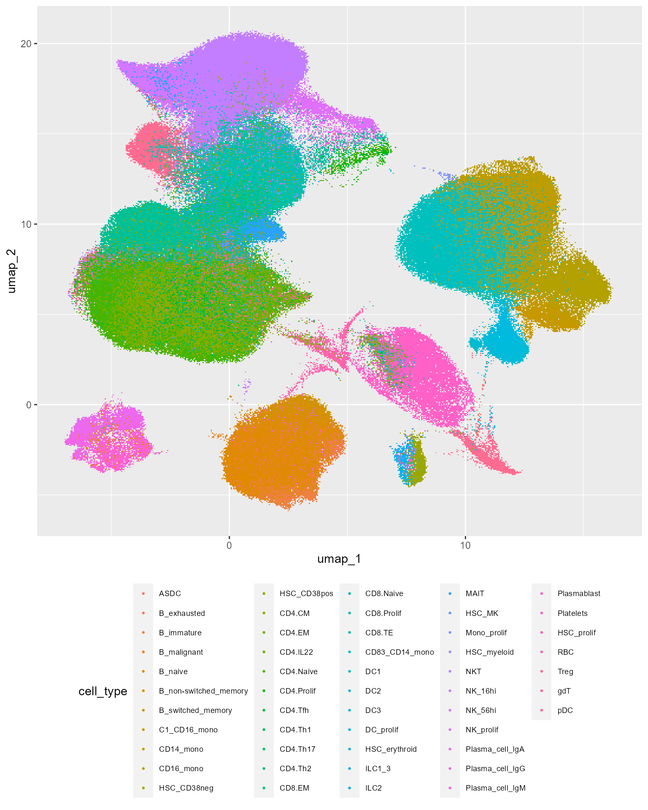
Let’s plot now the UMAPs for he PBMC-Covid19 dataset, limiting cell population clusters annotations to NK cells (there are more than 50 cell types annotated in this dataset). On the left all NK cells are grouped, while in the right different types of NK cells are highlighted by different colors.
df_covid_2plot <- arrange(df_covid, NK_tot) # rearranged to avoid overplotting
p1 <- ggplot(df_covid_2plot, aes(x = umap_1, y = umap_2, color = NK_tot)) +
geom_scattermore(size = 0.5) + #scale_color_manual(values = c('#00BFC4','#f8766d')) + geom_scattermore(size
geom_scattermore(size = 0.5) + #scale_color_manual(values = c('#00BFC4','#f8766d')) + =
geom_scattermore(size = 0.5) + #scale_color_manual(values = c('#00BFC4','#f8766d')) + 0.5)
geom_scattermore(size = 0.5) + #scale_color_manual(values = c('#00BFC4','#f8766d')) + +
geom_scattermore(size = 0.5) + #scale_color_manual(values = c('#00BFC4','#f8766d')) + #scale_color_manual(values
geom_scattermore(size = 0.5) + #scale_color_manual(values = c('#00BFC4','#f8766d')) + =
geom_scattermore(size = 0.5) + #scale_color_manual(values = c('#00BFC4','#f8766d')) + c('#00BFC4','#f8766d'))
geom_scattermore(size = 0.5) + #scale_color_manual(values = c('#00BFC4','#f8766d')) + +
scale_color_manual(values = c("#d3d3d3", "#f8766d")) + theme(legend.position = "none") +
theme_void()
p2 <- ggplot(df_covid_2plot, aes(x = umap_1, y = umap_2, color = NK_sub)) +
geom_scattermore(size = 0.5) + #scale_color_manual(values = c('#ff7f00','#e41a1c','#4daf4a','#984ea3','#377eb8')) + geom_scattermore(size
geom_scattermore(size = 0.5) + #scale_color_manual(values = c('#ff7f00','#e41a1c','#4daf4a','#984ea3','#377eb8')) + =
geom_scattermore(size = 0.5) + #scale_color_manual(values = c('#ff7f00','#e41a1c','#4daf4a','#984ea3','#377eb8')) + 0.5)
geom_scattermore(size = 0.5) + #scale_color_manual(values = c('#ff7f00','#e41a1c','#4daf4a','#984ea3','#377eb8')) + +
geom_scattermore(size = 0.5) + #scale_color_manual(values = c('#ff7f00','#e41a1c','#4daf4a','#984ea3','#377eb8')) + #scale_color_manual(values
geom_scattermore(size = 0.5) + #scale_color_manual(values = c('#ff7f00','#e41a1c','#4daf4a','#984ea3','#377eb8')) + =
geom_scattermore(size = 0.5) + #scale_color_manual(values = c('#ff7f00','#e41a1c','#4daf4a','#984ea3','#377eb8')) + c('#ff7f00','#e41a1c','#4daf4a','#984ea3','#377eb8'))
geom_scattermore(size = 0.5) + #scale_color_manual(values = c('#ff7f00','#e41a1c','#4daf4a','#984ea3','#377eb8')) + +
scale_color_manual(values = c("#ff7f00", "#e41a1c", "#4daf4a",
"#984ea3", "#d3d3d3")) + theme(legend.position = "none") +
theme_void()
p1 + p2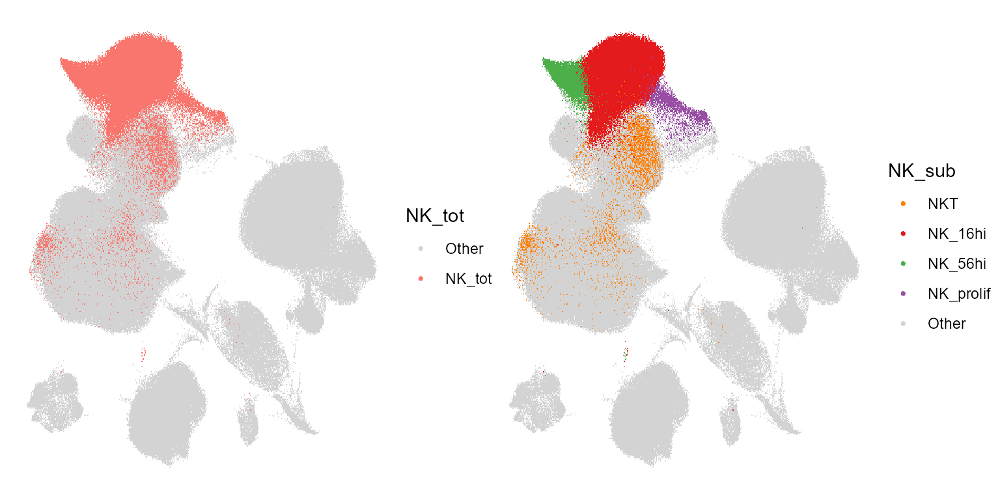
(Code not run. Computationally heavy: you can read the precomputed object in the next chunk) We apply now the usual preprocessing (scaling, extracting, labeling) to obtain the unclassified data_covid test dataset, without the Class column. Below is the code used for the preprocessing :
# you need to start from the converted
hd[["RNA"]]@counts <- hd[["raw"]]@counts
# scaling data
hd <- ScaleData(hd, do.center = F)
# subset and annotate
data_covid_unc <- data.frame(t(as.matrix(hd[["RNA"]]@scale.data[NK_signature,
])))
test$ID <- rownames(test)
rownames(test) <- 1:dim(test)[1]
# reorder columns
unc_data_hd <- test[, c(dim(test)[2], 2:dim(test)[2] - 1)]As before, for higher accessibility and possibility of reviewing without having computational power at hand, we pre-computed the data_covid object that can be read directly:
data_covid <- readRDS(file = "../inst/precomp/precomp_unc_data_hd.rds")
head(data_covid)
#> ID CD160 CD300A CD7 CLIC3 CST7 CTSW DCXR FCER1G GGNBP2 GNLY GZMA GZMB HOPX IGFBP7 IMP3 ITGB2 LAT2 MATK MCM7 MEA1
#> 1 AAACCTGAGAAACCTA-MH9179824 0 0 1.1047689 2.027132 1.922829 1.765014 0.000000 0.000000 0.000000 2.094058 1.530807 1.492126 1.716889 0 0.000000 1.6222362 0.000000 0 0 0
#> 2 AAACCTGAGAGTAATC-MH9179824 0 0 0.0000000 0.000000 0.000000 0.000000 0.000000 0.000000 0.000000 0.000000 0.000000 0.000000 0.000000 0 0.000000 0.0000000 0.000000 0 0 0
#> 3 AAACCTGAGAGTGAGA-MH9179824 0 0 0.9494119 0.000000 0.000000 0.000000 0.000000 0.000000 0.000000 0.000000 0.000000 0.000000 0.000000 0 1.289383 0.5430200 0.000000 0 0 0
#> 4 AAACCTGAGGAATCGC-MH9179824 0 0 1.4989832 0.000000 0.000000 0.000000 1.395969 0.000000 1.359509 0.000000 0.000000 0.000000 0.000000 0 0.000000 0.6597992 0.000000 0 0 0
#> 5 AAACCTGAGTGTTGAA-MH9179824 0 0 0.0000000 0.000000 1.674209 1.002174 0.000000 0.000000 0.000000 0.000000 2.179656 0.000000 0.000000 0 0.000000 0.9211044 0.000000 0 0 0
#> 6 AAACCTGCACCACGTG-MH9179824 0 0 0.0000000 0.000000 0.000000 0.000000 0.000000 1.827977 0.000000 0.000000 0.000000 0.000000 0.000000 0 0.000000 1.0577542 2.100651 0 0 0
#> MIEN1 MSN NDUFA2 NKG7 PLAC8 SPON2 TTC38 TYROBP UPP1 XCL1
#> 1 0.000000 1.340521 1.853498 1.7704979 0.0000000 0 2.824438 0.8012222 1.949271 0
#> 2 0.000000 0.000000 0.000000 0.0000000 0.9163376 0 0.000000 0.0000000 1.427674 0
#> 3 0.000000 1.152011 1.067756 0.4019944 0.0000000 0 0.000000 0.0000000 0.000000 0
#> 4 1.476124 0.000000 0.000000 0.0000000 0.0000000 0 0.000000 0.5608270 1.965042 0
#> 5 0.000000 0.000000 0.000000 0.6818879 0.0000000 0 0.000000 0.0000000 0.000000 0
#> 6 1.683528 0.000000 0.000000 0.5570748 1.4039370 0 0.000000 1.9047214 0.000000 0(Code not run. Computationally intensive) Also in this dataset the NK cells markers are individually inefficient in selecting NK-cells. Let’s have a look at them as previously done. To do so you can load the original Seurat object and use the Seurat::FeaturePlot() function:
hd <- LoadH5Seurat("./data/haniffa/haniffa21.processed.h5Seurat",
misc = F)
FeaturePlot(hd, features = NK_signature_orig[1:6]) #top 6Or you can plot individual genes (here GNLY) using a ggplot call on the UMAP coordinates in the dataframes:
datafull_covid <- cbind(df_covid, data_covid)
ggplot(datafull_covid, aes(umap_1, umap_2)) + geom_scattermore(aes(color = GNLY),
size = 0.5) + scale_color_gradient2(low = "gray", mid = "gray",
high = "purple", space = "Lab") + theme_minimal()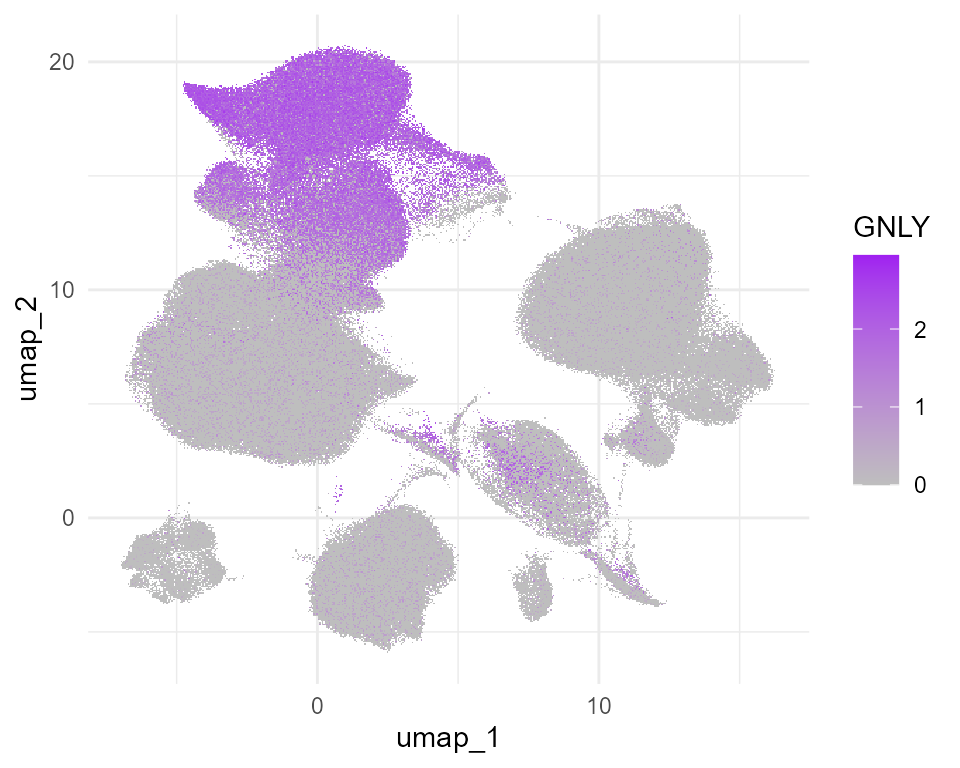
Finally we proceed with the classification of test dataset by fitting the computed models. The combiroc::classify() function returns the predicted class according to the models in reports$Models.
To this aim we prepare a list unc_data containing the unclassified data from the two test datatsets, data_3k and data_covid:
and a list dfs containing the dataframes:
The classify() function requires as input the unclassified_data in the pbmc3k or pbmcCovid data prepared from PBMC3K and Covid19-Haniffa datasets respectively. To test both datasets with all three models obtained in the three analyses modes at different stringency, we now build a loop that will do it using the lists just prepared.
# empty lists to be populated by the for loop
cl_data <- list()
analysis <- list()
# models to be used
reports <- reports_default
# for loop for the classify function
for (i in names(dfs)) {
df <- classify(unc_data[[i]], Models = reports$Models, Metrics = reports$Metrics,
Positive_class = "NK", Negative_class = "Other")
cl_data[[i]] <- df
dfs[[i]] <- cbind(dfs[[i]], df[, -1])
analysis[[i]] <- data.frame(matrix(0, ncol = 3, nrow = dim(cl_data[[i]])[2] -
1))
for (j in 2:dim(cl_data[[i]])[2]) {
table <- as.data.frame(table(dfs[[i]]$NK_tot, cl_data[[i]][,
j]))
TP <- table[table["Var1"] == "NK_tot" & table["Var2"] ==
"NK", "Freq"]
FP <- table[table["Var1"] == "Other" & table["Var2"] ==
"NK", "Freq"]
TN <- table[table["Var1"] == "Other" & table["Var2"] ==
"Other", "Freq"]
FN <- table[table["Var1"] == "NK_tot" & table["Var2"] ==
"Other", "Freq"]
SE <- round(TP/(TP + FN), 3)
SP <- round(TN/(TN + FP), 3)
analysis[[i]][j - 1, 1] <- SE
analysis[[i]][j - 1, 2] <- SP
analysis[[i]][j - 1, 3] <- SE + SP
rownames(analysis[[i]])[j - 1] <- colnames(cl_data[[i]])[j]
colnames(analysis[[i]]) <- c("SE", "SP", "Youden")
}
}
# store results specific for this mode
models_default <- reports$Models
cl_data_default <- cl_data
default_analysis <- analysis
# empty lists to be populated by the for loop
cl_data <- list()
analysis <- list()
# models to be used
reports <- reports_hiperf
# for loop for the classify function
for (i in names(dfs)) {
df <- classify(unc_data[[i]], Models = reports$Models, Metrics = reports$Metrics,
Positive_class = "NK", Negative_class = "Other")
cl_data[[i]] <- df
dfs[[i]] <- cbind(dfs[[i]], df[, -1])
analysis[[i]] <- data.frame(matrix(0, ncol = 3, nrow = dim(cl_data[[i]])[2] -
1))
for (j in 2:dim(cl_data[[i]])[2]) {
table <- as.data.frame(table(dfs[[i]]$NK_tot, cl_data[[i]][,
j]))
TP <- table[table["Var1"] == "NK_tot" & table["Var2"] ==
"NK", "Freq"]
FP <- table[table["Var1"] == "Other" & table["Var2"] ==
"NK", "Freq"]
TN <- table[table["Var1"] == "Other" & table["Var2"] ==
"Other", "Freq"]
FN <- table[table["Var1"] == "NK_tot" & table["Var2"] ==
"Other", "Freq"]
SE <- round(TP/(TP + FN), 3)
SP <- round(TN/(TN + FP), 3)
analysis[[i]][j - 1, 1] <- SE
analysis[[i]][j - 1, 2] <- SP
analysis[[i]][j - 1, 3] <- SE + SP
rownames(analysis[[i]])[j - 1] <- colnames(cl_data[[i]])[j]
colnames(analysis[[i]]) <- c("SE", "SP", "Youden")
}
}
# store results specific for this mode
models_hiperf <- reports$Models
cl_data_hiperf <- cl_data
hiperf_analysis <- analysis
# empty lists to be populated by the for loop
cl_data <- list()
analysis <- list()
# models to be used
reports <- reports_sniper
# for loop for the classify function
for (i in names(dfs)) {
df <- classify(unc_data[[i]], Models = reports$Models, Metrics = reports$Metrics,
Positive_class = "NK", Negative_class = "Other")
cl_data[[i]] <- df
dfs[[i]] <- cbind(dfs[[i]], df[, -1])
analysis[[i]] <- data.frame(matrix(0, ncol = 3, nrow = dim(cl_data[[i]])[2] -
1))
for (j in 2:dim(cl_data[[i]])[2]) {
table <- as.data.frame(table(dfs[[i]]$NK_tot, cl_data[[i]][,
j]))
TP <- table[table["Var1"] == "NK_tot" & table["Var2"] ==
"NK", "Freq"]
FP <- table[table["Var1"] == "Other" & table["Var2"] ==
"NK", "Freq"]
TN <- table[table["Var1"] == "Other" & table["Var2"] ==
"Other", "Freq"]
FN <- table[table["Var1"] == "NK_tot" & table["Var2"] ==
"Other", "Freq"]
SE <- round(TP/(TP + FN), 3)
SP <- round(TN/(TN + FP), 3)
analysis[[i]][j - 1, 1] <- SE
analysis[[i]][j - 1, 2] <- SP
analysis[[i]][j - 1, 3] <- SE + SP
rownames(analysis[[i]])[j - 1] <- colnames(cl_data[[i]])[j]
colnames(analysis[[i]]) <- c("SE", "SP", "Youden")
}
}
# store results specific for this mode
models_sniper <- reports$Models
cl_data_sniper <- cl_data
sniper_analysis <- analysisAfter the test have been run we can browse the results. The binary predictions of annotations performed by each markers combination (12 combinations in total, 4 for each analysis mode) were appended beside the actual original annotations (ground truth) in the dataframes contained in the list dsf.
Let’s review the first one, obtained on PBMC3K test dataset:
head(dfs$pbmc3k)
#> umap_1 umap_2 cell_type NK_tot Combination 1687 Combination 3196 Combination 3664 Combination 6850 Combination 9 Combination 227 Combination 633 Combination 651
#> AAACATACAACCAC -4.232792 -4.152139 Memory CD4 T Other Other Other Other Other Other Other Other Other
#> AAACATTGAGCTAC -4.892886 10.985685 B Other Other Other Other Other Other Other Other Other
#> AAACATTGATCAGC -5.508639 -7.211088 Memory CD4 T Other Other Other Other Other Other Other Other Other
#> AAACCGTGCTTCCG 11.332233 3.161727 CD14+ Mono Other Other Other Other Other Other Other Other Other
#> AAACCGTGTATGCG -7.450703 1.092022 NK NK_tot Other NK Other NK Other NK NK Other
#> AAACGCACTGGTAC -3.509504 -6.087042 Memory CD4 T Other Other Other Other Other Other Other Other Other
#> Combination 470 Combination 103610 Combination 1369 Combination 5018
#> AAACATACAACCAC Other Other Other Other
#> AAACATTGAGCTAC Other Other Other Other
#> AAACATTGATCAGC Other Other Other Other
#> AAACCGTGCTTCCG Other Other Other Other
#> AAACCGTGTATGCG Other Other Other Other
#> AAACGCACTGGTAC Other Other Other Otherand the second one. obtained on PBMC-Covid19 dataset:
head(dfs$pbmcCovid)
#> umap_1 umap_2 cell_type NK_sub NK_tot Combination 1687 Combination 3196 Combination 3664 Combination 6850 Combination 9 Combination 227 Combination 633
#> AAACCTGAGAAACCTA-MH9179824 2.9137340 12.675372 CD8.TE Other Other NK NK Other NK NK NK NK
#> AAACCTGAGAGTAATC-MH9179824 -0.3077546 7.747874 CD4.IL22 Other Other Other Other Other Other Other Other Other
#> AAACCTGAGAGTGAGA-MH9179824 0.4214194 7.311379 CD8.Naive Other Other Other Other Other Other Other Other Other
#> AAACCTGAGGAATCGC-MH9179824 0.1794526 5.680993 CD4.Naive Other Other Other Other Other Other Other Other Other
#> AAACCTGAGTGTTGAA-MH9179824 -0.5823255 11.208989 CD8.EM Other Other Other Other Other Other Other Other Other
#> AAACCTGCACCACGTG-MH9179824 9.1012907 9.604278 CD83_CD14_mono Other Other Other Other Other Other Other Other Other
#> Combination 651 Combination 470 Combination 103610 Combination 1369 Combination 5018
#> AAACCTGAGAAACCTA-MH9179824 NK Other Other Other Other
#> AAACCTGAGAGTAATC-MH9179824 Other Other Other Other Other
#> AAACCTGAGAGTGAGA-MH9179824 Other Other Other Other Other
#> AAACCTGAGGAATCGC-MH9179824 Other Other Other Other Other
#> AAACCTGAGTGTTGAA-MH9179824 Other Other Other Other Other
#> AAACCTGCACCACGTG-MH9179824 Other Other Other Other OtherThe SE and SP values for each markers combinations on both test datasets have been stored in the default_analysis, hiperf_analysis and sniper_analysis lists, one for each test dataset:
default_analysis
#> $pbmc3k
#> SE SP Youden
#> Combination 1687 0.819 0.993 1.812
#> Combination 3196 0.987 0.958 1.945
#> Combination 3664 0.858 0.979 1.837
#> Combination 6850 0.955 0.965 1.920
#>
#> $pbmcCovid
#> SE SP Youden
#> Combination 1687 0.799 0.955 1.754
#> Combination 3196 0.980 0.857 1.837
#> Combination 3664 0.571 0.972 1.543
#> Combination 6850 0.963 0.874 1.837
hiperf_analysis
#> $pbmc3k
#> SE SP Youden
#> Combination 9 0.813 0.989 1.802
#> Combination 227 0.897 0.988 1.885
#> Combination 633 0.884 0.984 1.868
#> Combination 651 0.826 0.988 1.814
#>
#> $pbmcCovid
#> SE SP Youden
#> Combination 9 0.925 0.892 1.817
#> Combination 227 0.945 0.883 1.828
#> Combination 633 0.956 0.876 1.832
#> Combination 651 0.925 0.893 1.818
sniper_analysis
#> $pbmc3k
#> SE SP Youden
#> Combination 470 0.606 0.994 1.600
#> Combination 103610 0.710 0.998 1.708
#> Combination 1369 0.510 0.995 1.505
#> Combination 5018 0.658 0.994 1.652
#>
#> $pbmcCovid
#> SE SP Youden
#> Combination 470 0.766 0.971 1.737
#> Combination 103610 0.598 0.982 1.580
#> Combination 1369 0.725 0.974 1.699
#> Combination 5018 0.804 0.972 1.776To make a few considerations on the numbers obtained, for each markers combination used we need to refer them to the original cells annotations and to the total number of cells in the dataset. This information is contained in the dataframes inside the dfs list that have been populated with the predicted annotations by the selected markers combination.
# cell type annotation of each cell (ground-truth)
pbmc3k_annot <- dfs[[1]]$cell_type
# total number of cells in the dataset
totcells_3k <- dim(dfs[[1]])[1]
# predicted annotation by the specific combination 1687
c1687_pred <- dfs[[1]][, "Combination 1687"]We can cross-tabulate the counts obtained by the specific combination segregated between “NK” and “Other” :
table_3k <- as.data.frame.matrix(table(pbmc3k_annot, c1687_pred))
table_3k
#> NK Other
#> Naive CD4 T 0 697
#> Memory CD4 T 0 483
#> CD14+ Mono 2 478
#> B 0 344
#> CD8 T 14 257
#> FCGR3A+ Mono 0 162
#> NK 127 28
#> DC 2 30
#> Platelet 0 14and calculate percent values globally or on each population (the latter being the sensitivity):
table_3k <- table_3k %>%
mutate(perc_global = 100 * round(NK/totcells_3k, 4)) %>%
mutate(perc_pop = 100 * round(NK/(NK + Other), 4))
table_3k
#> NK Other perc_global perc_pop
#> Naive CD4 T 0 697 0.00 0.00
#> Memory CD4 T 0 483 0.00 0.00
#> CD14+ Mono 2 478 0.08 0.42
#> B 0 344 0.00 0.00
#> CD8 T 14 257 0.53 5.17
#> FCGR3A+ Mono 0 162 0.00 0.00
#> NK 127 28 4.81 81.94
#> DC 2 30 0.08 6.25
#> Platelet 0 14 0.00 0.00We want now to calculate the global percentage (perc_global) for all the four combinations in the default mode (Combinations 1687, 3196, 3664 and 6850). Let’s do the above iteratively for the first 4 combinations of the three analysis modes.
This code calculates the global percentages for the default analysis and stores the values in a perc_default_3k dataframe:
perc_default_3k <- data.frame(matrix(0, nrow = 0, ncol = length(unique(dfs[[1]]$cell_type))))
# for markers combination in columns 5:8 of dataframe
# dfs[[1]], repeat the above process
for (i in colnames(dfs[[1]])[5:8]) {
annot <- dfs[[1]]$cell_type # cell type annotation of each cell (ground-truth)
totcells <- dim(dfs[[1]])[1] # total number of cells in the dataset
comb_pred <- dfs[[1]][, i] # predicted annotation by the 'i-th' combination
table <- as.data.frame.matrix(table(annot, dfs[[1]][, i])) %>%
mutate(perc_global = 100 * round(NK/totcells, 4)) %>%
mutate(perc_pop = 100 * round(NK/(NK + Other), 4))
perc_default_3k[i, ] <- table$perc_global
}
rownames(perc_default_3k) <- colnames(dfs[[1]])[5:8]
colnames(perc_default_3k) <- levels(dfs[[1]]$cell_type)This code calculates the global percentages for the hi performance analysis and stores the values in a perc_hiperf_3k dataframe:
perc_hiperf_3k <- data.frame(matrix(0, nrow = 0, ncol = length(unique(dfs[[1]]$cell_type))))
# for markers combination in columns 9:12 of dataframe
# dfs[[1]], repeat the above process
for (i in colnames(dfs[[1]])[9:12]) {
annot <- dfs[[1]]$cell_type # cell type annotation of each cell (ground-truth)
totcells <- dim(dfs[[1]])[1] # total number of cells in the dataset
comb_pred <- dfs[[1]][, i] # predicted annotation by the 'i-th' combination
table <- as.data.frame.matrix(table(annot, dfs[[1]][, i])) %>%
mutate(perc_global = 100 * round(NK/totcells, 4)) %>%
mutate(perc_pop = 100 * round(NK/(NK + Other), 4))
perc_hiperf_3k[i, ] <- table$perc_global
}
rownames(perc_hiperf_3k) <- colnames(dfs[[1]])[9:12]
colnames(perc_hiperf_3k) <- levels(dfs[[1]]$cell_type)This code calculates the global percentages for the sniper analysis and stores the values in a perc_sniper_3k dataframe:
perc_sniper_3k <- data.frame(matrix(0, nrow = 0, ncol = length(unique(dfs[[1]]$cell_type))))
# for markers combination in columns 13:16 of dataframe
# dfs[[1]], repeat the above process
for (i in colnames(dfs[[1]])[13:16]) {
annot <- dfs[[1]]$cell_type # cell type annotation of each cell (ground-truth)
totcells <- dim(dfs[[1]])[1] # total number of cells in the dataset
comb_pred <- dfs[[1]][, i] # predicted annotation by the 'i-th' combination
table <- as.data.frame.matrix(table(annot, dfs[[1]][, i])) %>%
mutate(perc_global = 100 * round(NK/totcells, 4)) %>%
mutate(perc_pop = 100 * round(NK/(NK + Other), 4))
perc_sniper_3k[i, ] <- table$perc_global
}
rownames(perc_sniper_3k) <- colnames(dfs[[1]])[13:16]
colnames(perc_sniper_3k) <- levels(dfs[[1]]$cell_type)Binding together the three set of results in a single perc_3k dataframe, then adding the previously calculated SE and SP values, we obtain a final res_pbmc3k result table:
# aggregate the percentages if three analysis modes in a
# single table
modes <- c(rep("default", 4), rep("hiperf", 4), rep("sniper",
4))
perc_3k <- rbind(perc_default_3k, perc_hiperf_3k, perc_sniper_3k)
perc_3k <- cbind(modes, perc_3k)
# add along the calculated SE and SP values
res_pbmc3k <- cbind(perc_3k, rbind(default_analysis$pbmc3k, hiperf_analysis$pbmc3k,
sniper_analysis$pbmc3k))
res_pbmc3k$Comb <- rownames(res_pbmc3k)
res_pbmc3k
#> modes Naive CD4 T Memory CD4 T CD14+ Mono B CD8 T FCGR3A+ Mono NK DC Platelet SE SP Youden Comb
#> Combination 1687 default 0.00 0.00 0.08 0 0.53 0 4.81 0.08 0 0.819 0.993 1.812 Combination 1687
#> Combination 3196 default 0.00 0.00 0.08 0 3.90 0 5.80 0.00 0 0.987 0.958 1.945 Combination 3196
#> Combination 3664 default 0.00 0.00 0.00 0 1.97 0 5.04 0.00 0 0.858 0.979 1.837 Combination 3664
#> Combination 6850 default 0.00 0.00 0.08 0 3.18 0 5.61 0.00 0 0.955 0.965 1.920 Combination 6850
#> Combination 9 hiperf 0.00 0.00 0.08 0 0.95 0 4.78 0.00 0 0.813 0.989 1.802 Combination 9
#> Combination 227 hiperf 0.00 0.00 0.08 0 0.99 0 5.27 0.11 0 0.897 0.988 1.885 Combination 227
#> Combination 633 hiperf 0.00 0.00 0.08 0 1.44 0 5.19 0.00 0 0.884 0.984 1.868 Combination 633
#> Combination 651 hiperf 0.00 0.00 0.08 0 1.02 0 4.85 0.00 0 0.826 0.988 1.814 Combination 651
#> Combination 470 sniper 0.08 0.08 0.00 0 0.45 0 3.56 0.00 0 0.606 0.994 1.600 Combination 470
#> Combination 103610 sniper 0.00 0.00 0.00 0 0.23 0 4.17 0.00 0 0.710 0.998 1.708 Combination 103610
#> Combination 1369 sniper 0.08 0.11 0.00 0 0.30 0 2.99 0.00 0 0.510 0.995 1.505 Combination 1369
#> Combination 5018 sniper 0.08 0.08 0.00 0 0.42 0 3.87 0.00 0 0.658 0.994 1.652 Combination 5018On PBMC3K test dataset the overall minimal SE for the top 4 combinations was 81.9%, while the minimal SP was 95.8%, showing that combinations of 3-4 genes can be highly precise.
We can compare percentages for each combination/analysis mode with a heatmap (see below). Combinations generated by the analysis in Sniper mode stand out from the others for their highest specificity (at the cost of a lower sensitivity): here the separation between NK cells and all others is maximum but, apart combinations 3196 and 6850 from the Default mode, all others combinations are able to sufficiently discriminate NK-cells from CD8-T.
mat <- as.matrix(perc_3k[, 2:10])
analysis_mode <- as.data.frame(perc_3k[, 1])
rownames(analysis_mode) <- rownames(perc_3k)
colnames(analysis_mode) <- "analysis"
rownames(analysis_mode) <- rownames(perc_3k)
my_palette <- terrain.colors(20, 1, rev = T)
# my_palette <- brewer.pal(11,'RdYlBu')
pheatmap(mat, color = my_palette, annotation_row = analysis_mode,
cluster_cols = F, cutree_rows = 3, cellwidth = 15, cellheight = 15)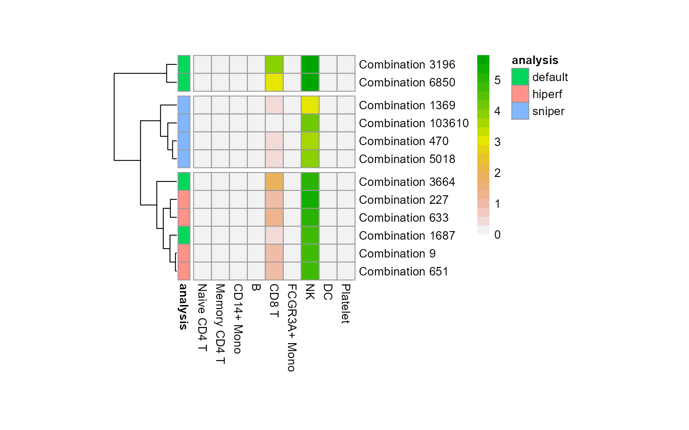
Single-cell DimentionPlots can be used to see/observe the classification distribution for each combination. As already evident from the heatmap, also from the DimPlots combination 3196 shows a lower specificity. Here are a few combinations prediction compared:
c3196 <- dfs[[1]][, 6]
c103610 <- dfs[[1]][, 14]
c227 <- dfs[[1]][, 10]
c1687 <- dfs[[1]][, 5]
p1 <- ggplot(dfs[[1]], aes(x = umap_1, y = umap_2, color = c3196)) +
geom_scattermore(size = 0.5)
p2 <- ggplot(dfs[[1]], aes(x = umap_1, y = umap_2, color = c103610)) +
geom_scattermore(size = 0.5)
p3 <- ggplot(dfs[[1]], aes(x = umap_1, y = umap_2, color = c227)) +
geom_scattermore(size = 0.5)
p4 <- ggplot(dfs[[1]], aes(x = umap_1, y = umap_2, color = c1687)) +
geom_scattermore(size = 0.5)
p1 + p2 + p3 + p4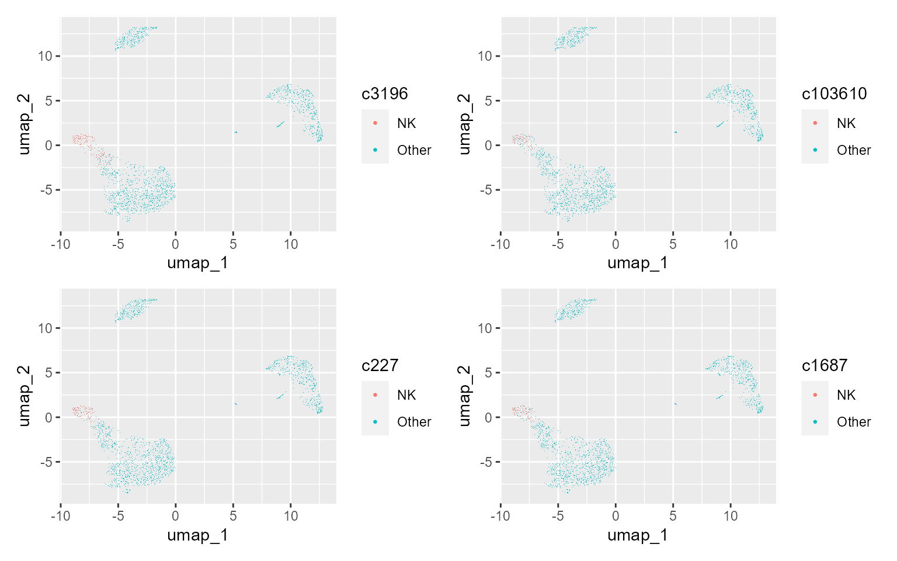
Now let’s do the same on the other test dataset (PBMC-Covid19):
# cell type annotation of each cell (ground-truth)
pbmcCovid_annot <- dfs[[2]]$cell_type
# total number of cells in the dataset
totcells_covid <- dim(dfs[[2]])[1]
# predicted annotation by the specific combination 1687
c1687_pred <- dfs[[2]][, "Combination 1687"]
table_covid <- as.data.frame.matrix(table(pbmcCovid_annot, c1687_pred))
# add percent values
table_covid <- table_covid %>%
mutate(perc_global = 100 * round(NK/totcells_covid, 4)) %>%
mutate(perc_pop = 100 * round(NK/(NK + Other), 4))
table_covid
#> NK Other perc_global perc_pop
#> ASDC 1 103 0.00 0.96
#> B_exhausted 1 3023 0.00 0.03
#> B_immature 2 5236 0.00 0.04
#> B_malignant 0 2291 0.00 0.00
#> B_naive 8 44128 0.00 0.02
#> B_non-switched_memory 0 3285 0.00 0.00
#> B_switched_memory 0 7244 0.00 0.00
#> C1_CD16_mono 0 4140 0.00 0.00
#> CD14_mono 13 62323 0.00 0.02
#> CD16_mono 1 16625 0.00 0.01
#> HSC_CD38neg 0 535 0.00 0.00
#> HSC_CD38pos 0 1703 0.00 0.00
#> CD4.CM 617 49287 0.10 1.24
#> CD4.EM 3 2631 0.00 0.11
#> CD4.IL22 16 18363 0.00 0.09
#> CD4.Naive 53 63043 0.01 0.08
#> CD4.Prolif 1 623 0.00 0.16
#> CD4.Tfh 10 13598 0.00 0.07
#> CD4.Th1 27 454 0.00 5.61
#> CD4.Th17 0 13 0.00 0.00
#> CD4.Th2 0 55 0.00 0.00
#> CD8.EM 813 18104 0.13 4.30
#> CD8.Naive 36 31139 0.01 0.12
#> CD8.Prolif 584 771 0.09 43.10
#> CD8.TE 16849 36685 2.60 31.47
#> CD83_CD14_mono 11 58496 0.00 0.02
#> DC1 0 366 0.00 0.00
#> DC2 1 3242 0.00 0.03
#> DC3 79 3278 0.01 2.35
#> DC_prolif 1 114 0.00 0.87
#> HSC_erythroid 0 773 0.00 0.00
#> ILC1_3 524 252 0.08 67.53
#> ILC2 24 69 0.00 25.81
#> MAIT 549 10443 0.08 4.99
#> HSC_MK 0 53 0.00 0.00
#> Mono_prolif 5 644 0.00 0.77
#> HSC_myeloid 0 53 0.00 0.00
#> NKT 1466 3581 0.23 29.05
#> NK_16hi 78886 13962 12.19 84.96
#> NK_56hi 6515 3927 1.01 62.39
#> NK_prolif 3644 1319 0.56 73.42
#> Plasma_cell_IgA 0 2699 0.00 0.00
#> Plasma_cell_IgG 0 3527 0.00 0.00
#> Plasma_cell_IgM 0 1163 0.00 0.00
#> Plasmablast 0 4121 0.00 0.00
#> Platelets 536 15311 0.08 3.38
#> HSC_prolif 0 180 0.00 0.00
#> RBC 214 2018 0.03 9.59
#> Treg 0 329 0.00 0.00
#> gdT 2269 13673 0.35 14.23
#> pDC 674 3938 0.10 14.61repeating it for the three analysis modes and aggregating the results:
# for markers combination in columns 6:9 of dataframe
# dfs[[2]], repeat the above process
perc_default_covid <- data.frame(matrix(0, nrow = 0, ncol = length(unique(dfs[[2]]$cell_type))))
for (i in colnames(dfs[[2]])[6:9]) {
annot <- dfs[[2]]$cell_type # cell type annotation of each cell (ground-truth)
totcells <- dim(dfs[[2]])[1] # total number of cells in the dataset
comb_pred <- dfs[[2]][, i] # predicted annotation by the 'i-th' combination
table <- as.data.frame.matrix(table(annot, dfs[[2]][, i])) %>%
mutate(perc_global = 100 * round(NK/totcells, 4)) %>%
mutate(perc_pop = 100 * round(NK/(NK + Other), 4))
perc_default_covid[i, ] <- table$perc_global
}
rownames(perc_default_covid) <- colnames(dfs[[2]])[6:9]
colnames(perc_default_covid) <- levels(dfs[[2]]$cell_type)
# for markers combination in columns 10:13 of dataframe
# dfs[[2]], repeat the above process
perc_hiperf_covid <- data.frame(matrix(0, nrow = 0, ncol = length(unique(dfs[[2]]$cell_type))))
for (i in colnames(dfs[[2]])[10:13]) {
annot <- dfs[[2]]$cell_type # cell type annotation of each cell (ground-truth)
totcells <- dim(dfs[[2]])[1] # total number of cells in the dataset
comb_pred <- dfs[[2]][, i] # predicted annotation by the 'i-th' combination
table <- as.data.frame.matrix(table(annot, dfs[[2]][, i])) %>%
mutate(perc_global = 100 * round(NK/totcells, 4)) %>%
mutate(perc_pop = 100 * round(NK/(NK + Other), 4))
perc_hiperf_covid[i, ] <- table$perc_global
}
rownames(perc_hiperf_covid) <- colnames(dfs[[2]])[10:13]
colnames(perc_hiperf_covid) <- levels(dfs[[2]]$cell_type)
# for markers combination in columns 14:17 of dataframe
# dfs[[2]], repeat the above process
perc_sniper_covid <- data.frame(matrix(0, nrow = 0, ncol = length(unique(dfs[[2]]$cell_type))))
for (i in colnames(dfs[[2]])[14:17]) {
annot <- dfs[[2]]$cell_type # cell type annotation of each cell (ground-truth)
totcells <- dim(dfs[[2]])[1] # total number of cells in the dataset
comb_pred <- dfs[[2]][, i] # predicted annotation by the 'i-th' combination
table <- as.data.frame.matrix(table(annot, dfs[[2]][, i])) %>%
mutate(perc_global = 100 * round(NK/totcells, 4)) %>%
mutate(perc_pop = 100 * round(NK/(NK + Other), 4))
perc_sniper_covid[i, ] <- table$perc_global
}
rownames(perc_sniper_covid) <- colnames(dfs[[2]])[14:17]
colnames(perc_sniper_covid) <- levels(dfs[[2]]$cell_type)
# aggregate the percentages if three analysis modes in a
# single table
perc_covid <- rbind(perc_default_covid, perc_hiperf_covid, perc_sniper_covid)
perc_covid <- cbind(modes, perc_covid)
# add along the calculated SE and SP values
res_pbmcCovid <- cbind(perc_covid, rbind(default_analysis$pbmcCovid,
hiperf_analysis$pbmcCovid, sniper_analysis$pbmcCovid))
res_pbmcCovid$Comb <- rownames(res_pbmcCovid)As already done for the PBMC3K test dataset, we obtain a final result table for the PBMC-Covid19 test dataset too (res_pbmcCovid). It contains global percentages of identified cells, sensitivity and specificity for all 12 markers combinations taken into account.
The differences can be better appreciated in the following heatmap plotting the percentage of identified cells.
mat <- as.matrix(perc_covid[, 2:52])
analysis_mode <- as.data.frame(perc_covid[, 1])
rownames(analysis_mode) <- rownames(perc_covid)
colnames(analysis_mode) <- "analysis"
rownames(analysis_mode) <- rownames(perc_covid)
my_palette <- terrain.colors(20, 1, rev = T)
pheatmap(mat, color = my_palette, annotation_row = analysis_mode,
cluster_cols = F, cutree_rows = 3, fontsize = 10, fontsize_col = 8,
cellwidth = 9, cellheight = 10, treeheight_row = 15)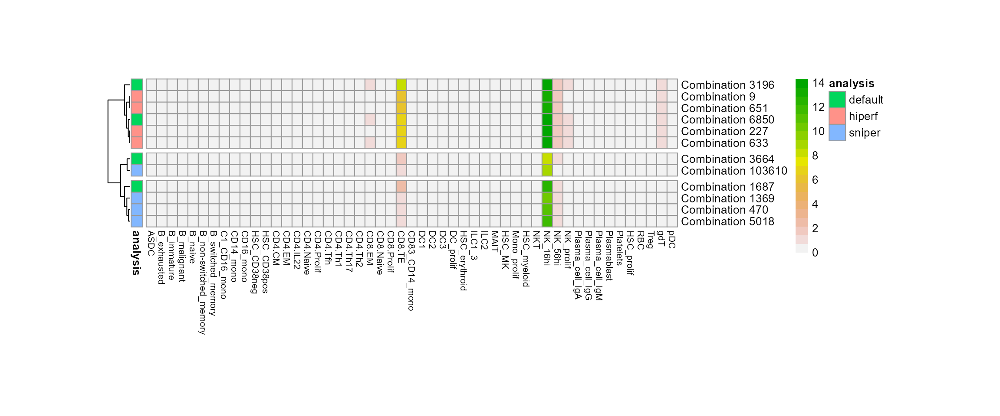
As expected the sensitivity strongly increases using combination obtained with high performance mode. Default mode is scattered across different levels of efficiency, while the Sniper mode is highly specific.
The heatmap above is clustered by rows (with the default method = "complete" of hclust()): the twelve combinations taken into consideration (rows) appear to segregate in three different clusters. The first, bigger cluster contains all combinations form hi-performance mode and a couple more from the default mode: these combinations have the strongest signals, both for the NK cells but also for the closely related CD8 cells. The second cluster contains just two combinations (#3664 and #103610): these combinations shows the weakest signals. The third cluster containing three combinations from sniper mode and one from default mode is the one in which the biggest different between NK and CD8 signals can be observed. Such combinations are probably the most interesting, with particular reference to the three from sniper mode (#1369, #470 and #5018).
Below we plot the distribution of cells identified as “NK” by these combinations:
c1369 <- dfs[[2]][, 16]
c470 <- dfs[[2]][, 14]
c5018 <- dfs[[2]][, 17]
p1 <- ggplot(dfs[[2]], aes(x = umap_1, y = umap_2, color = c1369)) +
geom_scattermore(size = 0.2)
p2 <- ggplot(dfs[[2]], aes(x = umap_1, y = umap_2, color = c470)) +
geom_scattermore(size = 0.2)
p3 <- ggplot(dfs[[2]], aes(x = umap_1, y = umap_2, color = c5018)) +
geom_scattermore(size = 0.2)
plot_grid(p1, p2, p3, align = "h", nrow = 2, rel_widths = c(0.5,
0.5))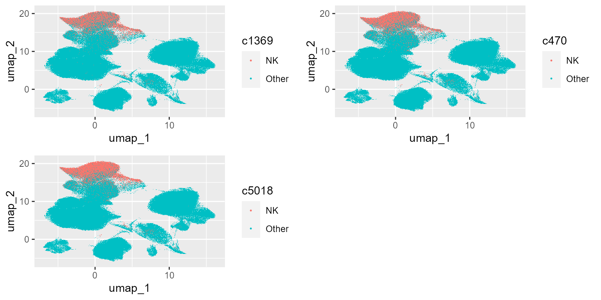
With the roc_reports() function we previously computed the models (reports$Models) for each analysis mode, and assigned them to three separated objects: models_default, models_hiperf and models_sniper.
Using the standard predict() method on these models is now possible to calculate prediction scores for each cell type as predicted probabilities. We named such score with the term combi_score and we are going to compute it to see how efficiently cell types can be discriminated by the selected combinations.
Please note: In the context of our data the combi-scores are predicted probabilities of being NK cells
# computation of combi_scores for all combinations on 3K
# dataset
scores_3k <- list()
scores_3k[[1]] <- predict(reports_default$Models$`Combination 3196`,
newdata = data_3k, type = "response")
scores_3k[[2]] <- predict(reports_default$Models$`Combination 6850`,
newdata = data_3k, type = "response")
scores_3k[[3]] <- predict(reports_default$Models$`Combination 3664`,
newdata = data_3k, type = "response")
scores_3k[[4]] <- predict(reports_default$Models$`Combination 1687`,
newdata = data_3k, type = "response")
scores_3k[[5]] <- predict(reports_hiperf$Models$`Combination 9`,
newdata = data_3k, type = "response")
scores_3k[[6]] <- predict(reports_hiperf$Models$`Combination 651`,
newdata = data_3k, type = "response")
scores_3k[[7]] <- predict(reports_hiperf$Models$`Combination 227`,
newdata = data_3k, type = "response")
scores_3k[[8]] <- predict(reports_hiperf$Models$`Combination 633`,
newdata = data_3k, type = "response")
scores_3k[[9]] <- predict(reports_sniper$Models$`Combination 103610`,
newdata = data_3k, type = "response")
scores_3k[[10]] <- predict(reports_sniper$Models$`Combination 1369`,
newdata = data_3k, type = "response")
scores_3k[[11]] <- predict(reports_sniper$Models$`Combination 470`,
newdata = data_3k, type = "response")
scores_3k[[12]] <- predict(reports_sniper$Models$`Combination 5018`,
newdata = data_3k, type = "response")Then we assemble a combi_score matrix for the 3K dataset, and we use it to plot a heatmap to visualize all the combi-scores (i.e. the probabilities of being NK cells) given by each one of the twelve combination taken into account for all cell clusters:
# generation of the combi_score matrix for the 3K dataset
heatmap_3k <- data.frame(matrix(0, nrow = 0, ncol = length(unique(dfs[[1]]$cell_type))))
for (i in 1:12) {
mat_score <- as.data.frame(scores_3k[[i]])
mat_score$cell_type <- as.character(df_3k$cell_type)
colnames(mat_score) <- c("score", "cell_type")
heat_score <- mat_score %>%
group_by(cell_type) %>%
summarize(Median = median(score))
heatmap_3k[i, ] <- heat_score$Median
}
rownames(heatmap_3k) <- colnames(dfs[[1]])[5:16]
colnames(heatmap_3k) <- heat_score$cell_type
# plotting of the combi_score matrix
mat <- as.matrix(heatmap_3k)
analysis_mode <- as.data.frame(perc_covid[, 1])
rownames(analysis_mode) <- rownames(heatmap_3k)
colnames(analysis_mode) <- "analysis"
my_palette <- heat.colors(25, 1, rev = T)
pheatmap(mat, color = my_palette, annotation_row = analysis_mode,
cluster_cols = F, cutree_rows = 3, fontsize = 10, fontsize_col = 8,
cellwidth = 9, cellheight = 10, treeheight_row = 15)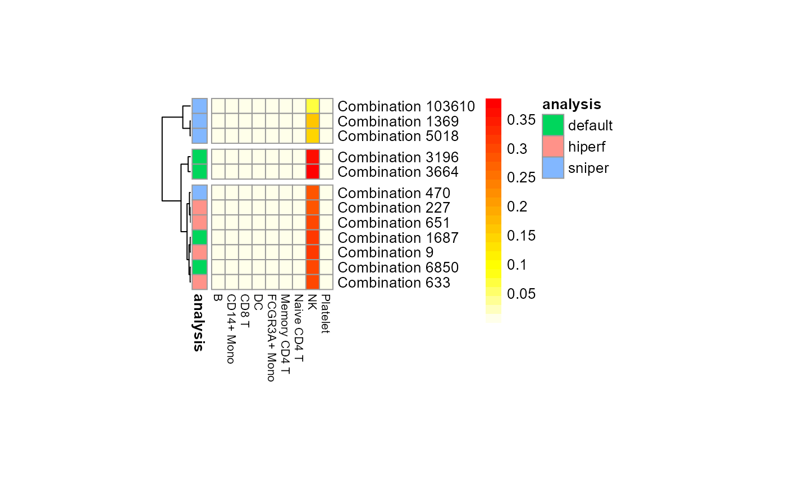
We are now doing the same (calculation of combi-scores and their plotting in a heatmp) for the PBMC-Covid19 dataset.
# computation of combi_scores for all combinations on COVID
# dataset
scores_c19 <- list()
scores_c19[[1]] <- predict(reports_default$Models$`Combination 3196`,
newdata = data_covid, type = "response")
scores_c19[[2]] <- predict(reports_default$Models$`Combination 6850`,
newdata = data_covid, type = "response")
scores_c19[[3]] <- predict(reports_default$Models$`Combination 3664`,
newdata = data_covid, type = "response")
scores_c19[[4]] <- predict(reports_default$Models$`Combination 1687`,
newdata = data_covid, type = "response")
scores_c19[[5]] <- predict(reports_hiperf$Models$`Combination 9`,
newdata = data_covid, type = "response")
scores_c19[[6]] <- predict(reports_hiperf$Models$`Combination 651`,
newdata = data_covid, type = "response")
scores_c19[[7]] <- predict(reports_hiperf$Models$`Combination 227`,
newdata = data_covid, type = "response")
scores_c19[[8]] <- predict(reports_hiperf$Models$`Combination 633`,
newdata = data_covid, type = "response")
scores_c19[[9]] <- predict(reports_sniper$Models$`Combination 103610`,
newdata = data_covid, type = "response")
scores_c19[[10]] <- predict(reports_sniper$Models$`Combination 1369`,
newdata = data_covid, type = "response")
scores_c19[[11]] <- predict(reports_sniper$Models$`Combination 470`,
newdata = data_covid, type = "response")
scores_c19[[12]] <- predict(reports_sniper$Models$`Combination 5018`,
newdata = data_covid, type = "response")
# generation of the combi_score matrix for the 3K dataset
heatmap_c19 <- data.frame(matrix(0, nrow = 0, ncol = length(unique(dfs[[2]]$cell_type))))
for (i in 1:12) {
mat_score <- as.data.frame(scores_c19[[i]])
mat_score$cell_type <- as.character(df_covid$cell_type)
colnames(mat_score) <- c("score", "cell_type")
heat_score <- mat_score %>%
group_by(cell_type) %>%
summarize(Median = median(score))
heatmap_c19[i, ] <- heat_score$Median
}
rownames(heatmap_c19) <- colnames(dfs[[2]])[6:17]
colnames(heatmap_c19) <- heat_score$cell_type
# plotting of the combi_score matrix
mat <- as.matrix(heatmap_c19)
analysis_mode <- as.data.frame(perc_covid[, 1])
rownames(analysis_mode) <- rownames(heatmap_c19)
colnames(analysis_mode) <- "analysis"
my_palette <- heat.colors(25, 1, rev = T)
pheatmap(mat, color = my_palette, annotation_row = analysis_mode,
cluster_cols = F, cutree_rows = 3, fontsize = 10, fontsize_col = 8,
cellwidth = 9, cellheight = 10, treeheight_row = 15)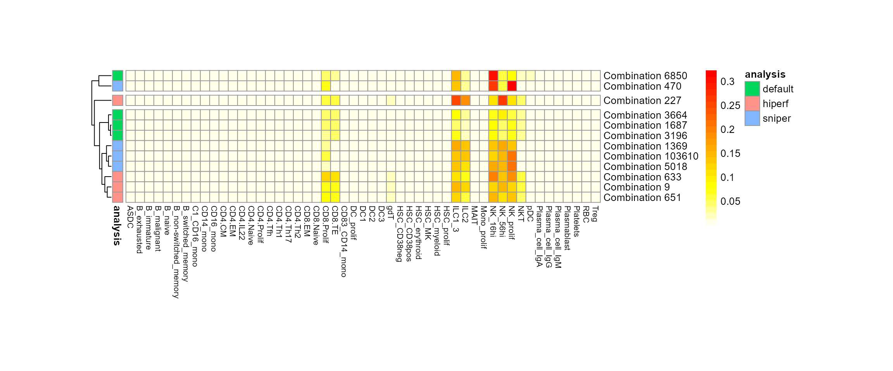
Combi_score for the combination #1369 for both test datasets can be calculated and visualized in this way:
c_score_3k_1369 <- predict(reports_sniper$Models$`Combination 1369`,
newdata = data_3k, type = "response")
c_score_19_1369 <- predict(reports_sniper$Models$`Combination 1369`,
newdata = data_covid, type = "response")
p1 <- ggplot(df_3k, aes(x = cell_type, y = c_score_3k_1369, fill = cell_type)) +
geom_boxplot(outlier.shape = NA, show.legend = FALSE) + theme(axis.text.x = element_text(angle = 90,
vjust = 0.5, hjust = 1)) + scale_y_continuous(name = "combi_score c1369") +
ggtitle("PBMC-3k")
p2 <- ggplot(df_covid, aes(x = cell_type, y = c_score_19_1369,
fill = cell_type)) + geom_boxplot(outlier.shape = NA, show.legend = FALSE) +
theme(axis.text.x = element_text(angle = 90, vjust = 0.5,
hjust = 1)) + scale_y_continuous(name = "combi_score c1369") +
ggtitle("PBMC-Covid19")
plot_grid(p1, p2, align = "h", nrow = 1, rel_widths = c(0.6,
2.4))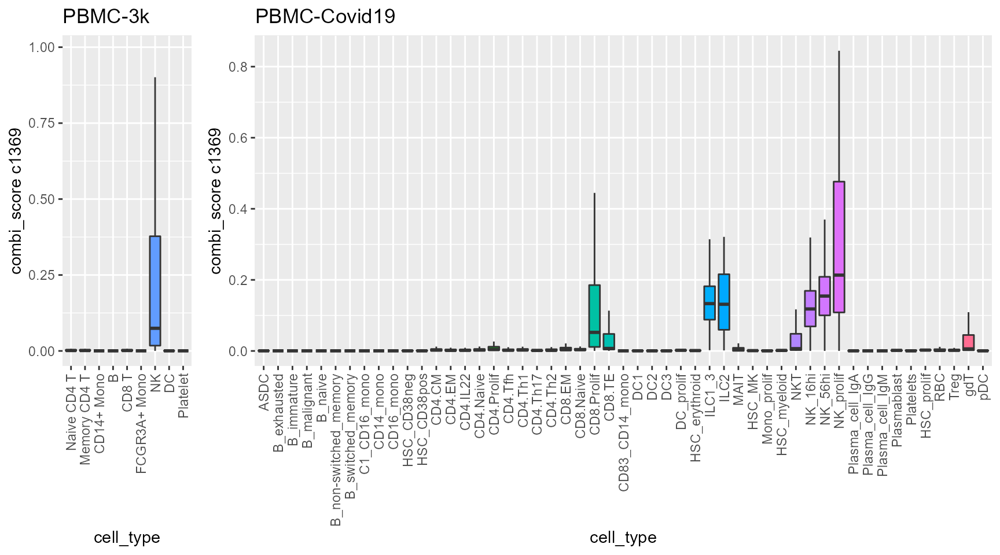
In the same way are calculated the combi_scores for combinations #470 and #5018 (from sniper mode):
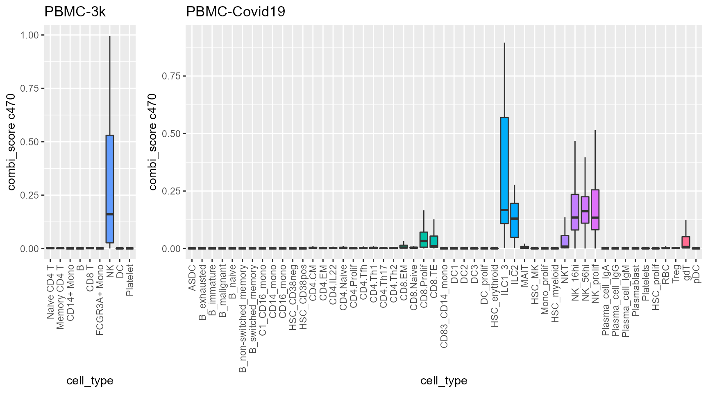
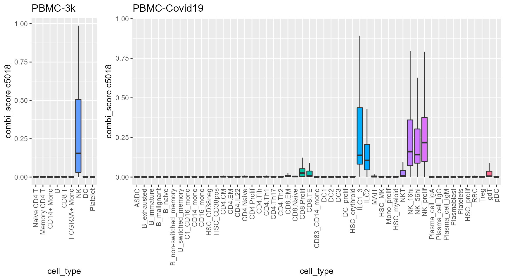
The boxplots above show the probability scores given by the expression of the selected marker combinations (the combi scores). All three combinations used here perform very well on the PBMC-3k validation dataset, indicating an higher combi score only for the cell subset labelled as “NK”.
On the PBMC-Covid19 dataset other cell types have a non-zero combi score: as expected, CD8 cells are also picked up (green boxplots, that have very low median values in all the 3 combinations), but with combinations #470 and #5018 at a very low level, much lower than NK cells. For all combinations all NK cell types are correctly identified as such (except NKT cells that are basically T lymphocites, ) and a high signal can also be observed for ILC cells. NKs belong to ILCs family, so given their similarity, and since ILCs were not properly annotated in the coarse-grained training dataset, they can’t be distinguished with this specific workflow.
As shown also by these combi scores, combiroc proved to be effective in finding highly specific combinations to identify cell types on both test datasets.
Overall, the identification of NK cells with all the 3 analysis modes is quite accurate. Forcing combiroc to work at high SE/SP regime and - in particular - increasing the stringency of the analysis (as in sniper mode) the package was able to identify NK cells in an highly specific manner.
This kind of classification is highly specific with a cost on the side of sensitivity, i.e. it favours false negatives more than false positives (that’s why it was dubbed as sniper mode of action). Such modality can help to pinpoint a considerable amount of cells in a very accurate way (even if not all of them), and to locate them precisely on UMAPs, facilitating and significantly accelerating the process of manual annotation starting from combinations obtained with a classic unbiased selection.
We want now to check the effect of using selected combinations on a different published score developed for whole genes signatures.
To do so, we are going to use the gene signature score described in Della Chiara, Gervasoni, Fakiola, Godano et al. 2021 which takes into account both the expression level and co-expression of genes within each single cell.
Given a geneset, the gene-signature-score’s increase is directly proportional to the number of expressed genes in the signature and to the sum of their level of expression. We reproduced this score in the R function signature_score.R:
source("../inst/external_code/signature_score.R")which takes as input a Seurat object and a character vector of a gene signature and computes the score.
To this extent, we first compute the signature score of the whole NK signature (30 genes) for all the cells in the PBMC-3K test dataset and we store it in its list object:
# pbmc3k.final is the Seurat object for the PBMC-3K dataset
df1 <- signature_score(pbmc3k.final, NK_signature)
dfs[["pbmc3k"]][["NK_sscore"]] <- df1$scaled_combined_scoreThen we do the same for all the cells in the PBMC-Covid19 test dataset
(computationally heavy: you can skip this and read the pre-computed in the next chunk):
# hd is the Seurat object for the PBMC-Covid19 (Haniffa)
# dataset
df2 <- signature_score(hd, NK_signature)Load a pre-computed df2 dataframe of precomputed scores for PBMC-Covid19 dataset:
df2 <- readRDS("../inst/precomp/precomp_df2_scores.rds")
dfs[["pbmcCovid"]][["NK_sscore"]] <- df2$scaled_combined_score
p1 <- ggplot(dfs[[1]], aes(x = cell_type, y = NK_sscore, fill = cell_type)) +
geom_boxplot(outlier.shape = NA, show.legend = FALSE) + theme(axis.text.x = element_text(angle = 90,
vjust = 0.5, hjust = 1)) + ggtitle("PBMC-3k")
p2 <- ggplot(dfs[[2]], aes(x = cell_type, y = NK_sscore, fill = cell_type)) +
geom_boxplot(outlier.shape = NA, show.legend = FALSE) + theme(axis.text.x = element_text(angle = 90,
vjust = 0.5, hjust = 1)) + ggtitle("PBMC-Covid19")
plot_grid(p1, p2, align = "h", nrow = 1, rel_widths = c(0.7,
2.3))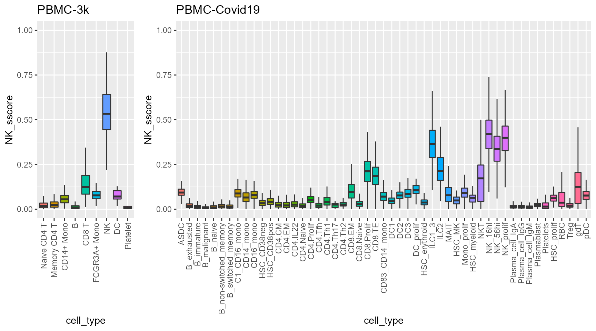
The NK-signature score for the PBMC-3K dataset correctly discriminates NK-cells from others: the boxplot on the left shows the highest score for NK cells and a slightly, as expected, increased score for cytotoxic CD8-T cells. The singal nevertheless, is noisy compared to the histograms of the combi store.
The boxplot on the right shows the NK-signature score for the PBMC-Covid19 dataset: again ILC1_3 cells were found to have a NK-signature score values comparable to the NK cells one, while in NK T cells were reduced.
How does the gene score behave when computed over a marker combination rather than a whole gene signature? In other words, which is the effect of a combiroc-driven marker combination on the gene score?
To answer to theese questions we analysed the distribution of the gene score of the same 3 sniper combinations considered in ‘combi-score’ section, in both test datasets.
We can see which genes are in these combinations with the show_markers() function
# show_markers(markers_table = tab_default,
# selected_combinations = c(6850,1687, 103610))
show_markers(markers_table = tab_default, selected_combinations = c(1369,
470, 5018))
#> Combination Composing_markers
#> 1 Combination 1369 CD7-GNLY-MCM7
#> 2 Combination 470 CD160-CD7-GNLY
#> 3 Combination 5018 CD160-CD7-GNLY-IGFBP7First, we define selected combinations in vector-like structures:
c1369 <- c("GNLY", "GNLY", "MCM7")
c470 <- c("CD160", "CD7", "GNLY")
c5018 <- c("CD160", "CD7", "GNLY", "IGFBP7")Then we compute signature scores with selected combinations on the PBMC-Covid19 dataset
(computationally heavy: you can skip this chunk and read the precomputed in the next chunck):
df <- signature_score(hd, c1369)
dfs[["pbmcCovid"]][["c1369_score"]] <- df$scaled_combined_score
df <- signature_score(hd, c470)
dfs[["pbmcCovid"]][["c470_score"]] <- df$scaled_combined_score
df <- signature_score(hd, c5018)
dfs[["pbmcCovid"]][["c5018_score"]] <- df$scaled_combined_scoreRead a pre-computed dfs object with all precomputed scores
dfs <- readRDS("../inst/precomp/precomp_dfs_all_scores.rds")Let’s have a look at the plots
p1 <- ggplot(dfs[[2]], aes(x = cell_type, y = c3196_score, fill = cell_type)) +
geom_boxplot(outlier.shape = NA, show.legend = FALSE) + theme(axis.text.x = element_text(angle = 90,
vjust = 0.5, hjust = 1))
p2 <- ggplot(dfs[[2]], aes(x = cell_type, y = c1687_score, fill = cell_type)) +
geom_boxplot(outlier.shape = NA, show.legend = FALSE) + theme(axis.text.x = element_text(angle = 90,
vjust = 0.5, hjust = 1))
p3 <- ggplot(dfs[[2]], aes(x = cell_type, y = c103610_score,
fill = cell_type)) + geom_boxplot(outlier.shape = NA, show.legend = FALSE) +
theme(axis.text.x = element_text(angle = 90, vjust = 0.5,
hjust = 1))
p1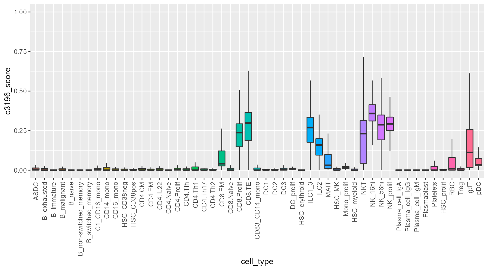
p2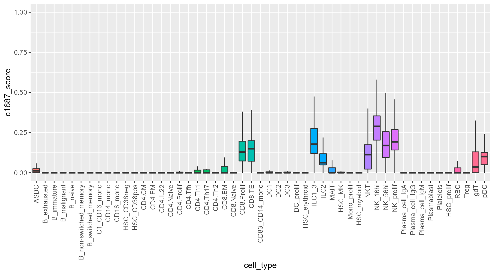
p3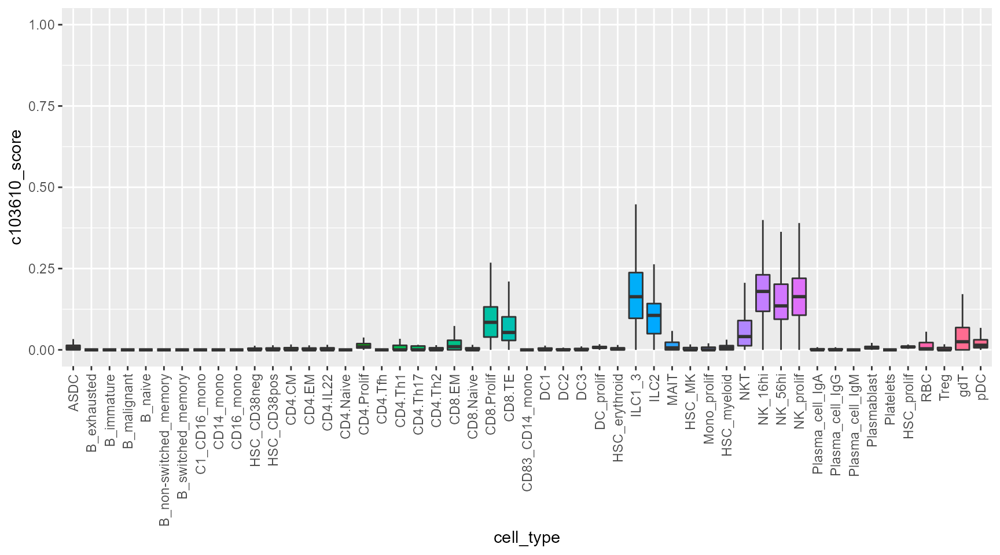
Remarkably, despite the 10-7.5 fold reduction in the number of considered features to build the gene score, also this score confirmed that the considered sniper combinations were as accurate as the whole signature in indicating the NK clusters and that the values were even less noisy, suggesting that these combination can be used as a refined version of the NK signature.
However gene score values in CD8+ were moderately higher and closer to NK cluster ones with respect to combiroc score values. This is due to the fact that all the genes within the combinations are considered equally and their expression is simply summed to compute the gene score, while combiroc models assign a ‘weight’ to each gene, further indicating the power of combiroc combination models in suggesting the identity of a cluster with a modest amount of genes.
Finally, let’s check now the effect of a set of random combinations on the PBMC-Covid19 dataset too, as previously done for the PBMC-3K test dataset
(computationally heavy: you can skip this chunk and jump to the plotting since values have been pre-computed and loaded a couple of chunks ago).
# this is the code to compute random combinations to be
# added to dfs. The values are precomputed and previsoulsy
# loaded.
combs_length <- c(30, 2, 3, 4, 5)
random_combs <- c(0, 0, 0, 0, 0)
set.seed(1492)
for (i in combs_length) {
random_list <- sample(rownames(hd), i)
df <- signature_score(hd, random_list)
dfs[["pbmcCovid"]][[paste0("random_", as.character(i))]] <- df$scaled_combined_score
random_combs[which(combs_length == i)] <- paste0("random_",
as.character(i))
}
p1 <- ggplot(dfs[[2]], aes(x = cell_type, y = random_2, fill = cell_type)) +
geom_boxplot(outlier.shape = NA, show.legend = FALSE) + theme(axis.text.x = element_text(angle = 90,
vjust = 0.5, hjust = 1)) + xlab("")
p2 <- ggplot(dfs[[2]], aes(x = cell_type, y = random_3, fill = cell_type)) +
geom_boxplot(outlier.shape = NA, show.legend = FALSE) + theme(axis.text.x = element_text(angle = 90,
vjust = 0.5, hjust = 1)) + xlab("")
p3 <- ggplot(dfs[[2]], aes(x = cell_type, y = random_4, fill = cell_type)) +
geom_boxplot(outlier.shape = NA, show.legend = FALSE) + theme(axis.text.x = element_text(angle = 90,
vjust = 0.5, hjust = 1)) + xlab("")
p4 <- ggplot(dfs[[2]], aes(x = cell_type, y = random_5, fill = cell_type)) +
geom_boxplot(outlier.shape = NA, show.legend = FALSE) + theme(axis.text.x = element_text(angle = 90,
vjust = 0.5, hjust = 1)) + xlab("")
plot_grid(p1, p2, p3, p4, align = "h", nrow = 2, rel_widths = c(0.5,
0.5))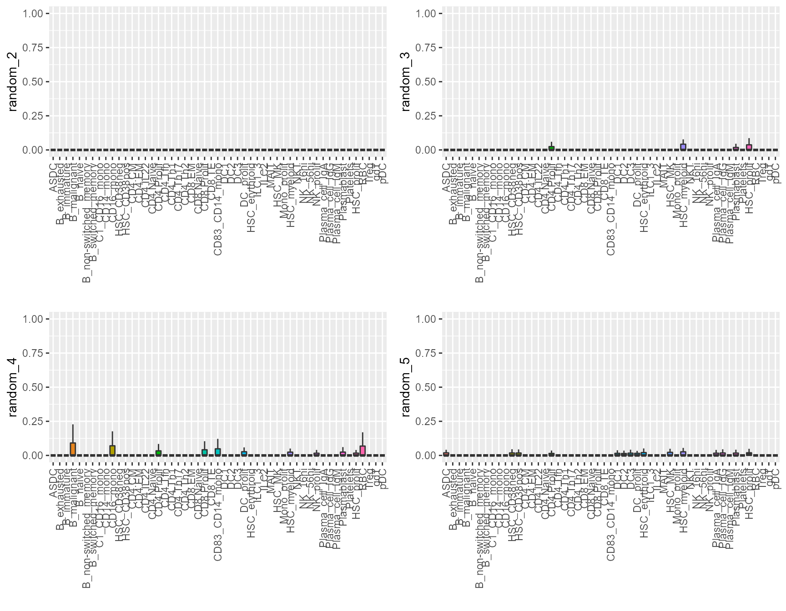
p5 <- ggplot(dfs[[2]], aes(x = cell_type, y = random_30, fill = cell_type)) +
geom_boxplot(outlier.shape = NA, show.legend = FALSE) + theme(axis.text.x = element_text(angle = 90,
vjust = 0.5, hjust = 1)) + xlab("")
p5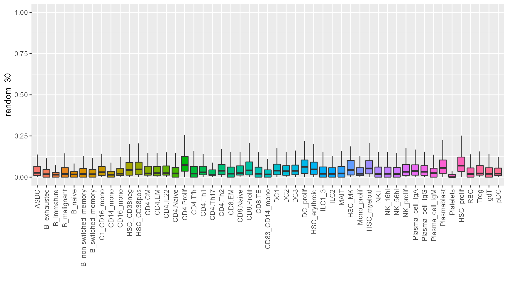
Here random combinations do not have a preferential cluster and show a generalized higher background signal noise (same happens for PBMC-3K dataset, not shown).
Beyond using scores of random combinations as negative control, they also show the magnitude of background noise associated to each random combination taken into consideration. In fact, random scores show quite homogeneously distributed values across clusters indicating that the cluster-preferential distributions of real combinations scores are not stochastic. Generally speaking since the higher is the length of random signatures, the higher will be the noise hence the probability to pick genes expressed in all the clusters: this suggests that the higher is the length of a real DEG signature the higher is the probability to include less specific genes and to increase the noise.
This guided tutorial shows how to use the combiroc package to optimize single-cell gene signature with combinations of marker and to identify NK cells in two different public scRNAseq datasets:
Identifying NK cells using the expression level of the best markers individually is not efficient since they are too unspecific for classification purposes if taken one by one. The power of a combined signature of three or four markers only is comparable - and in some cases superior - to that of a whole scRNAseq gene signature, tipically in the range of tens of genes: scaling down a gene signature while retaining its discriminatory power is highly relevant in both research and diagnostic context.
Finally, the usefulness of a highly specific tool, such as combiroc in the “Sniper” mode, is of particular relevance in cases in which researchers need to manually annotate cell population clusters obtained in scRNAseq experiments.
Back to the top of this doc
sessionInfo()
#> R version 4.1.1 (2021-08-10)
#> Platform: x86_64-w64-mingw32/x64 (64-bit)
#> Running under: Windows 10 x64 (build 19043)
#>
#> Matrix products: default
#>
#> locale:
#> [1] LC_COLLATE=English_United States.1252 LC_CTYPE=English_United States.1252 LC_MONETARY=English_United States.1252 LC_NUMERIC=C LC_TIME=English_United States.1252
#>
#> attached base packages:
#> [1] stats graphics grDevices utils datasets methods base
#>
#> other attached packages:
#> [1] scattermore_0.7 pheatmap_1.0.12 cowplot_1.1.1 colorspace_2.0-2 RColorBrewer_1.1-2 ggpubr_0.4.0 ggplot2_3.3.5 tidyr_1.1.3
#> [9] SeuratDisk_0.0.0.9019 pbmc3k.SeuratData_3.1.4 ifnb.SeuratData_3.1.0 SeuratData_0.2.1 combiroc_0.2.3 patchwork_1.1.1 SeuratObject_4.0.2 Seurat_4.0.4
#> [17] dplyr_1.0.7 knitr_1.34 httr_1.4.2
#>
#> loaded via a namespace (and not attached):
#> [1] readxl_1.3.1 backports_1.2.1 systemfonts_1.0.2 plyr_1.8.6 igraph_1.2.6 lazyeval_0.2.2 splines_4.1.1 listenv_0.8.0
#> [9] digest_0.6.29 htmltools_0.5.2 fansi_0.5.0 magrittr_2.0.1 memoise_2.0.0 tensor_1.5 cluster_2.1.2 ROCR_1.0-11
#> [17] openxlsx_4.2.4 globals_0.14.0 matrixStats_0.60.1 pkgdown_1.6.1 spatstat.sparse_2.0-0 rappdirs_0.3.3 ggrepel_0.9.1 haven_2.4.3
#> [25] textshaping_0.3.5 xfun_0.29 crayon_1.4.2 jsonlite_1.7.2 spatstat.data_2.1-0 survival_3.2-11 zoo_1.8-9 glue_1.4.2
#> [33] polyclip_1.10-0 gtable_0.3.0 leiden_0.3.9 car_3.0-11 future.apply_1.8.1 abind_1.4-5 scales_1.1.1 DBI_1.1.1
#> [41] rstatix_0.7.0 miniUI_0.1.1.1 Rcpp_1.0.7 viridisLite_0.4.0 xtable_1.8-4 reticulate_1.20 spatstat.core_2.3-0 foreign_0.8-81
#> [49] bit_4.0.4 htmlwidgets_1.5.4 ellipsis_0.3.2 ica_1.0-2 farver_2.1.0 pkgconfig_2.0.3 sass_0.4.0 uwot_0.1.10
#> [57] deldir_0.2-10 utf8_1.2.2 labeling_0.4.2 tidyselect_1.1.1 rlang_0.4.11 reshape2_1.4.4 later_1.3.0 cellranger_1.1.0
#> [65] munsell_0.5.0 tools_4.1.1 cachem_1.0.6 cli_3.0.1 generics_0.1.1 moments_0.14 broom_0.7.9 ggridges_0.5.3
#> [73] evaluate_0.14 stringr_1.4.0 fastmap_1.1.0 yaml_2.2.1 ragg_1.1.3 goftest_1.2-2 bit64_4.0.5 fs_1.5.0
#> [81] fitdistrplus_1.1-5 zip_2.2.0 purrr_0.3.4 RANN_2.6.1 pbapply_1.4-3 future_1.22.1 nlme_3.1-152 mime_0.11
#> [89] formatR_1.11 hdf5r_1.3.4 compiler_4.1.1 rstudioapi_0.13 curl_4.3.2 plotly_4.10.0 png_0.1-7 ggsignif_0.6.3
#> [97] spatstat.utils_2.2-0 tibble_3.1.6 bslib_0.3.0 stringi_1.7.4 highr_0.9 desc_1.3.0 forcats_0.5.1 lattice_0.20-44
#> [105] Matrix_1.3-4 vctrs_0.3.8 pillar_1.6.4 lifecycle_1.0.1 spatstat.geom_2.2-2 lmtest_0.9-38 jquerylib_0.1.4 RcppAnnoy_0.0.19
#> [113] data.table_1.14.0 irlba_2.3.3 httpuv_1.6.2 R6_2.5.1 promises_1.2.0.1 rio_0.5.27 KernSmooth_2.23-20 gridExtra_2.3
#> [121] parallelly_1.28.1 codetools_0.2-18 MASS_7.3-54 gtools_3.9.2 assertthat_0.2.1 rprojroot_2.0.2 withr_2.4.3 sctransform_0.3.2
#> [129] hms_1.1.0 mgcv_1.8-36 parallel_4.1.1 grid_4.1.1 rpart_4.1-15 rmarkdown_2.11 carData_3.0-4 Rtsne_0.15
#> [137] pROC_1.18.0 shiny_1.6.0